| あなたの思考を見える化 アイデアマラソン発想法 : 誰でもできる 誰でもだせる | |
| 樋口健夫 | |
| (2017) | |
樋口健夫
アイデアマラソンは、あなたの人生を強力に支援します。
この発想システムの正式な名前は「アイデアマラソン発想システム」ですが、本書では「アイデアマラソン」と呼びましょう。
どんなことでも、思いついた発想を、その場でノートに書き続け、毎日続けるだけというアイデアマラソン。ルールも簡単で、誰にでもできて、数か月間継続すれば必ず効果が出る発想システムです。
一九八四年に、私はアイデアマラソンを始めました。それ以来、私自身が三十四年間以上、自ら実行継続し、発想をノートに書いてきました。いまだに問題なく続いています。最近では、毎日の発想を記録する数が増えて、毎日五〇個に加速しています。
現在までに、すでに四十四万個以上の発想を、四七三冊のノートに書き残してきました。現在も、年に一万八千個以上の発想を出し続け、記録しています。
頭に浮かぶ一つのまとまったことで、あとで役に立つだろうと、あなたが思ったら、すべて発想と呼びます。難しい発明や、哲学的なことでなくても、ちょっと思いついたこと、考えたこと、望んでいることなど、すべて発想ですし、自分を表現する俳句も、詩も、スケッチまでが発想であるといえるでしょう。分野も問いません。
私も、あらゆる分野の発想を、アイデアマラソンのノートに書いてきたのです。この継続と蓄えを通じて、私は素晴らしい体験をしました。発想をして記録することが、もっとたくさん発想を出すためのプロセスとなり、発想したことを実行。実現する第一歩なのです。仕事にも、生活にも、生きがいにも、子育てにも、執筆にも、アイデアマラソンは、積極的に私を助けてくれました。
アイデアマラソンは、私の始めた発想のシステムですが、すでに多くの人が積極的にアイデアマラソンに参加し、発想の記録を続けています。
ビジネスマン、技術者、学生、私の家族など、様々な立場の人が含まれています。米国のヴァージニア大学工学部で授業に採用されて、七年になります。英語、中国語、タイ語、韓国語、ヒンディ語、ネパール語でも、紹介されています。アメリカ人、タイ人、インド人、ネパール人にもアイデアマラソンを実行する人がいます。
バブルが崩壊した今、日本が一番必要としているのは、より自由な、基礎的な、広範な発想です。無数に出される発想、出た発想をまた別の人が咀疇思考して、別の発想にしていく発想のネットワーク化のシステムです。
無数の発想のネットワーク化が、夫婦の間でも、家族でも、学校でも、企業でも、社会でも、一番必要とされているものだと思います。現在、日本の企業は、新製品や新しいコンセプトの商品・サービスなどを考えるために、新しい仕組みの発想を必要としています。アイデアマラソンは、仕事にも間違いなく活用できます。この三十四年間、私自身が仕事で活用してきたのですから。
私は、自分の体験と発想の例の中から、みなさんにアイデアマラソンの素晴らしい効果を説明したいと思います。本書を読まれたみなさんが、アイデアマラソンを実行したいとお考えになるように、できるだけ分かりやすく説明します。ぜひとも実行されることをお勧めします。そろえていただくものは、一冊目の新しいノートとペンだけです。
アイデアマラソンで要求されるのは、たった一つ。継続するための強い意志です。自分自身の中にある楽をしようという気持ちとの闘いです。
少なくとも三か月間は、懸命に毎日発想を残そうと頑張る
ことが大切です。つまり自分との闘いのマラソンであるということです。三か月の継続は、自分の発想力と継続力の証明になります。アイデアマラソンは、脳とノートとの協調です。
三か月間を乗り越えると、自分の出した発想の中にキラリと光るものを見つけることができるでしょう。人生の川底の砂に混ざった砂金を一粒見つけたのかもしれません。
発想を追い求めることは、自分の内面への冒険旅行です。自分の心の中でどれだけの思考を広げることができるかの試みです。
お約束できるのは、あなたがこのアイデアマラソンを開始して、三か月間続けたら、自分でも知らなかった能力に気が付くことです。こんなに素晴らしい発想力を、あなたが持っていることを知るのです。
自分自身の未知の能力を発見することは、まさにあなたの人生のロマンであります。
◎発想の準備
一冊のノート（できればＡ５タイプのファイルノート。例えばマルマン社製Ｆ〇八三Ｂ Ａ５、二〇穴ルーズリーフ細罫の追加用紙リフィル）をご用意ください。そのノートを、この本をお読みの間、ずっとそばに置いてください。ノートを失くさないように。
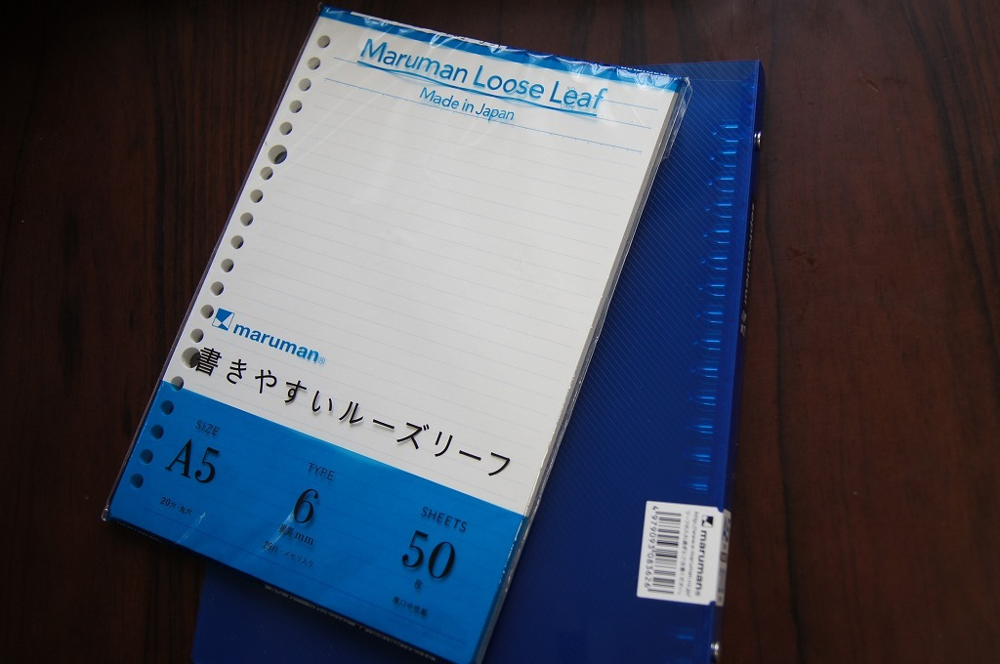
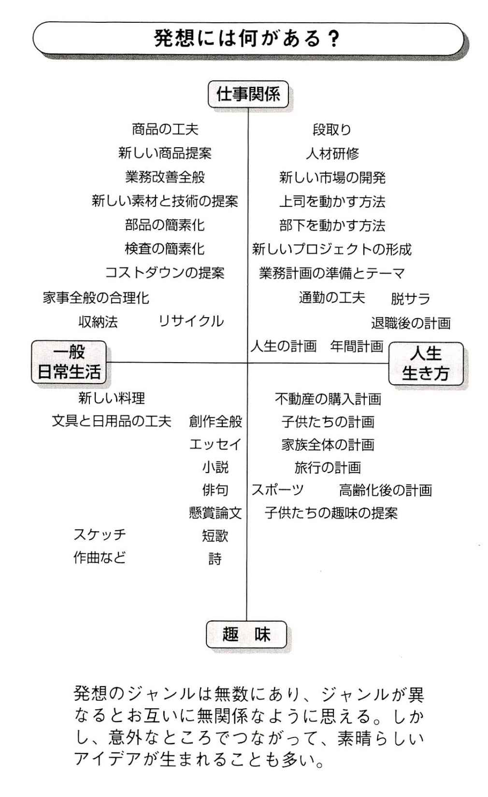
私がアイデアマラソンを始めたのは、三八歳の時です。
お客の事務所の待合室にいた時、水槽に立ち上る泡を見ていて、「あの泡の数で時間を表示できないかな......」と、新しい時計の発想を思いつき、ノートに書き留めたのが最初です。次の日にもそのノートに、別の発想を書き込んでいました。
始めた時は、オリジナルの発想を、毎日考えつくことができるとは夢にも思っていませんでした。数か月で発想の泉が涸れるのではないかと思いながらも、一〇〇個、一〇〇〇個、一万個と続けていきました。発想をするにも慣れが生じるのです。
こうして長期間実行してみると、一日に最低一個、新しい発想を考えることは、そんなに難しいことではないと分かりました。ほんのちょっとした工夫も、デザインも、使い心地を良くすることも、家族や、友人への贈り物を考えることも、すべて発想でした。
一日に一個出すことと、一日に三個出すことにはあまり時間的な違いはないことも分かりました。たくさん発想を出したり、良い発想が出たら、すごく気分が良いことにも気が付きました。
世間の常識でいえば、毎日数個の発想を書き残すことは、非常に難しいことのように思われていますし、私も最初はそう思っていました。しかし、やってみて、自分で自分にノルマを課してみると、案外何とかなるものでした。
発想の領域を限定しないことも、とても大切です。自分の専門分野や興味がある分野を発想の対象にしたいと思いがちですが、実際は、「専門分野は知り尽くしている」という潜在意識が逆に働いて、なかなか専門分野に関する発想は出てこないものです。
専門分野からちょっと離れて自分の隣の部門とか、全く考えたことのない部分に首を突っ込んでみると、案外色々な岡目八目的な斬新な発想が出てくるものです。自分の専門分野以外のほうが、もつと発想が湧くことが案外多いのです。
どんなものでも発想の対象になります。時計の発想なんかは、いくらでも出てきます。
例えば、私の最初の発想が、自分だけが分かる「泡の時計」だったので、隠れた時計というのをいくつか考えました。
ビジネスで大切なお客と話している時に時計をちらりと見ることは、相手に「早く帰れ」とか、「もう終わりましょう」と言っていることと同じです。相手が気を遣ったり、白けたりします。こんな時に、自分の腕時計を覗き込まないで、正確な時間を知ることができるようにしておくのは、ビジネスマンのマナーであり、スマートさであります。それらの方法を考えてみましょう。
【発想例】自分だけが分かる時計
◎腕時計以外の時計を自分の周りにたくさん用意しておく。例えばパソコン画面上、スマホ、携帯電話、電卓、時計付きペン、ラジカセなど。
◎「隠された時計」を考える。「置物の人形の向きで時間が分かる」「花瓶の花の方角で時間が分かる」「水槽の泡の数で時間が分かる」など。
◎腕時計のバンドの手前側に、二つめの小さなデジタル時計を付けておき、腕を斜めに見るだけで、時間が分かる。
◎「声をかけると時計が飛び出してくるペン立て」「薄いシート状のデジタル時計ユニットで、両面接着テープでどこにでも貼り付けることができる」「電球や蛍光灯に貼り付けるスケスケ液晶時計」「頭をなでると目の中に時間を映す人形」
逆に、訪間中のお客のところから一定の時間で立ち去りたいという場合もあります。そんな時には、携帯電話に「二〇分後に呼び出し音だけを鳴らせる装置」二〇分後に秘書に実際に呼び出しをかけさせるための、こちらからの『呼び水コール』を送る方法」など、更に色々なものが考えられます。
携帯に似た退散用のニセ携帯電話音の発生器というのも需要はあるでしょう。
このようにどんどんと発想を出してはノートに書き留めるのです。身近にある腕時計のバリエーションの発想は、いくらでも出てきます。あなたも一つ考えてみてください。
【発想コーナー】
「どのような発想が多いか」
私の場合、過去二〇年間の発想で最も多いのは「カバン」でしょう。その次に「時計」が来ると思います。その他、「椅子」、「テーブル」、「車」、「自転車」などが続きます。
どのような発想が多くなるかは、その人によって異なるのです。私はこれを「発想のパーソナルエリア」と呼んでいます。
◆ポイント
①
質は問わない。数で勝負。
②
自分で納得するならば、何でも書き残す。
③
雪の結晶の核のように、発想にはネタがいる。ネタには、雑誌、友人、チラシなどが極めて有効で、テレビや映画などは、監督の意図するところに引っ張られることが多いので、難しい。
◆プラクティス
誰にも知られないで、自分だけ時間を知る方法を二つ考えてください。極めて小さな時計をどこかに仕込むという風に。いつも自分が携帯している「お守り札」に時計を付けるような発想です。日本には正確で、安い時計がいくらでもありますから、バンドから外して、別のものに腕時計の時計の部分だけを取り付けても面白いでしょう。
アイデアマラソンのルールは、すごく簡単です。
〔１〕人生ノート
まず一冊のノートを持つ。このノートをいつも持っていて、自分で書くものは、すべてこのノートに書きます。あなたの財産の詰まった「人生ノート」ですから、失くさないように注意します。最初のノートが終わると次のノートに書き始めます。
〔２〕毎日、最低一個発想を出す
どんな内容でも構いません。自分の頭の中で考えたものであれば、新しい機能のものでも、少し便利になるものでも、新しい考え方でも良いのです。全く領域を限定しません。
詩でも、俳句でも、短歌でも、短いエッセイでも良いのです。スケッチ一つでも構いません。
〔３〕思いついた発想をノートに書き留める
発想は、思いついた瞬間に、できるだけ短く、簡潔に書き留めますが、短すぎてあとで内容が理解できないと困ります。絵を入れることは、後の理解の助けになります。
〔４〕同じノートに書き続ける
色々なノートに書かないで、同じノートに、頁を飛ばさないで、書き続けます。日付順に発想が記録されていくことになります。頁の右上に頁数、左上に日付を書きます。
一頁に八個ほどの発想を書き留めます。細かくたくさん書かないほうがあとで読みやすいのです。
〔５〕ノートにナンバリングしていく
新しいノートを使い始めると、そのノートの背に通算番号と年を書きます。
（例えば、一冊めを二〇〇四年に始めるとすれば、「001-2004」）
アイデアマラソンのルールは、これだけです。他には何もありません。規則を簡単にしていることが、アイデアマラソンを長続きさせるポイントだと思います。
一個の発想は一〇分ほど考えれば必ず出る。それを書き込むことと合わせて一五分。
寝る直前に発想を出して寝ると、すごく寝つきが良くなります。脳が適当に「ああ、疲れた」と寝るのに積極的になるからだと思います。ただ、素晴らしい発想を思いついてしまって、興奮して寝られない場合は、責任を持てません。
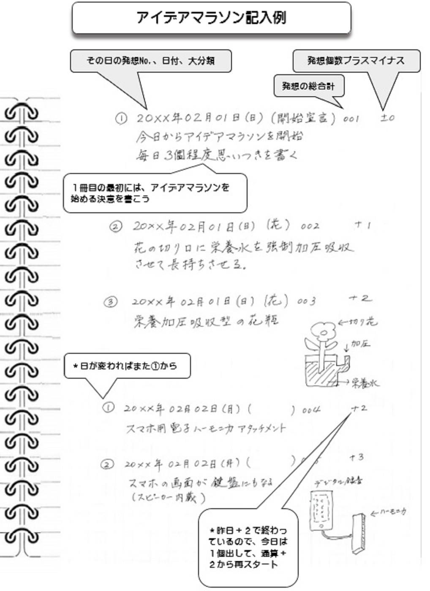
「アイデアマラソン記入例」について（絵を参照）
・最初の発想の記入
１冊目の最初には、アイデアマラソンを始める決意を書きます。
・①
2 0 X X年 2月1日（日）（決意） 001 ±0
「①
」は、１日ごとの発想の数です。もし、３個の場合は「①
」から「②
」、「③
」と番号を振ります。そして、２日目の１個目の発想は「①
」からのスタートとなります。
「（決意）」は、大分類を記入します。発想の決意ですので「（決意）」となります。分類の例としては、（花）、（ハーモニカ）などです。
「001」は、発想の総数になりますので、１日目に３個、２日目に３個を発想した場合は、合計で６個６個ですので、２日目の３個目は「006」となります。
「±０」は、バランス数を表示します。１日に１個が発想の基本数ですので、１個目は「±０」となり、２個目を出すと「＋１」になります。同様に、３個目は「＋２」となります。次の日の１個目は、前日の最後のバランス数から始まります。次の日に発想を出すのを忘れた場合バランス数は１個減ります。従って、何日か忘れるとバランス数はマイナスになります。
発想コーナー
「備忘録」
私は家を出る時に、何か忘れ物をしがちで、よく「ああ、忘れた」と家に帰って、家族に冷やかされます。そこで、玄関の扉に忘れ物をしていないかどうかの掲示板を付けます。
今は、ラベルプリンターで、「ノート、財布、鍵、携帯電話」と書いて玄関の扉の内側に貼ってあります。家を出る前に、その掲示を指差して、確かめます。あなたは忘れ物をしませんか？
◆ポイント
①
当初は、アイデアマラソンのノート以外に、会社の手帳（住所録を含む）や、予定用の薄い手帳（プラナー）などを併用していました。
②
今は、アイデアマラソンのノートに、すべて合体させました。プラナーは、アウトルックの一か月間のスケジュール用紙を月ごとにＡ４横サイズでプリントして、用紙の左側にルーズリーフ用の穴を二十個開けて、アイデアマラソンのファイルノートに閉じてあります。（これをカール社のグリッザーという機械を使います。
また住所録は、ワープロにデータベースで入っていて、印刷したものを縮小コピーして、ファイルノートの仕切り紙に貼り付けてあります。年に二度ほどアップデートします。
③
ノートや手帳は、何冊にも分かれていると、紛失する可能性が倍増します。私は三十四年間の四七三冊のアイデアノートをすべて無事に保管しています。それでも出先で忘れかけたことは何度かありました。
④
発想が出なかったら、一日を終わらせない決意が必要です。
◆プラクティス
あなたは私ほど、忘れ物をすることはないと思いますが、万が一、忘れるとすれば、忘れ物を防ぐ方法を何か考えてください。
アイデアマラソンの目標は三つあります。
〔目標１〕個人の発想能力の向上
個人の発想能力を高めることがアイデアマラソンの第一の目標です。
アイデアマラソンを一定期間でも毎日継続できれば、ほぼ自動的に目的を達成できます。数か月実行するだけで、開始する前の自分とは異なつた遥かに創造的な自分を発見することになるでしょう。
これは本書の初めから終わりまで主張していることですが、一端始めたら最低三か月間は継続しないと、この効果は享受することができません
。
継続は力といいますが、継続する忍耐と意志が力を呼ぶ
のです。強い意志がアイデアマラソンの唯一の原料になります。人は、良いことだと分かっていても、「何か面倒だなあ」と後回しにしてしまう停滞的性向があります。
アイデアマラソンの継続については、無意識に面倒だと思うことがありますが、発想が出ると誰でも充実感を感じるので、一定期間継続できれば、あとは習慣的に続くものです。発想は出せると思えば出るのです。
〔目標２〕グループ能力の向上
アイデアマラソンの影響の第二はグループにあります。
家族も、友人たちも、会社も、社会も、すべてグループです。
例えば、企業が何か新しいことを考えつくのは、企業に属している社員個人が発想するからです。アイデアマラソンで、個人が発想能力を向上させることができれば、その個人が属している集団である家族とか企業にも、発想の影響が出るでしょう。社会も、アイデアマラソンの普及から良い影響を受けるでしょう。
多数の個人が幸運に恵まれると、社会にも、企業にも、国家にも繁栄がめぐってくると思います。個人の、家庭の、社会の思考の蓄積を、次の世代に残していくことも可能です。
〔目標３〕天才の発掘
資源を持たない、狭い国上の日本の生き抜く道は、頭脳しかありません。したがってずば抜けた知識力の頭脳をよりずば抜けた創造力の頭脳に育てることと、人類がいまだ考えつかなかったような超人的な発想を出せる天才を探し求めることです。その発想にも、積み上げと慣れが必要です。そのための具体的手段となるのがアイデアマラソンです。
ではアイデアマラソンで、いかに天才を見つけることができるかを説明しましょう。例えばレオナルド・ダ・ビンチのように絵を描いた人は、その素晴らしさを誰もがすぐに感じることができました。これは彫刻でも同じです。しかし、哲学的な考え方、新しいコンセプト、技術などは、本人が、何か書き、何かどこかに表現することで、初めて周囲の人から、「この人は、ひょっとすると天才では」ということになるのです。
天才にも基礎教育は必要です。アインシュタインですら、特許局に勤務、大学でおしえていなかって、自分の考えを表現する手段を得なかったとしたら、世に出ることができなかったかもしれません。
発想を書き残し、その発想の中で、キラリと光るものを、更に深く掘り起こしてピカリと光らせることが、天才を発見する手段だと思います。
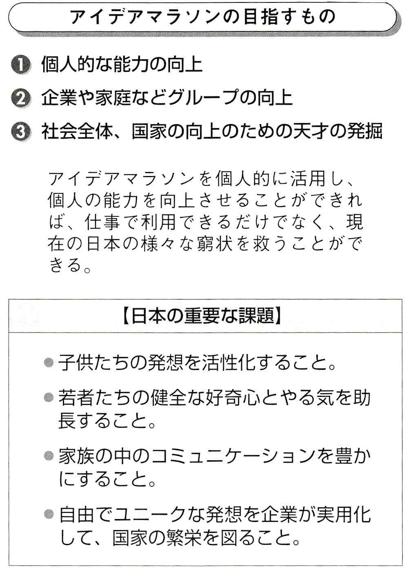
発想コーナー
「天才とは」
歴史上に天才といわれた人は数多くいますが、真の天才とは、人類には未知の発見や画期的発明を、全く唐突に成し遂げた人であります。
場合によってはほとんど学ぶことなく、驚くべき発明。発見をした人を天才とする場合がありますが、いかに天才でも最低限の教育は必要で、歴史上では天才であったにもかかわらず、教育を受けられず、変人扱いされて、人生を終わらせたような人も多かったのではないでしょうか。
逆に、天才でも何でもなく、地道に研究している中で、画期的な発見をした人、国の力、グループの力などを活用した「天才」も、私たちは天才と呼ぶことがあります。これらを後天的天才と呼ぶことも可能です。
◆ポイント
①
アイデアマラソンの第一日標は、個人の発想能力を開拓すること。
②
個人の発想能力向上の積み上げが、家族、社会、会社、学校、国家の力になります。
③
アイデアマラソンのもう一つの目標は、今後の国際社会の中で一番必要とされる「天才」の発掘です。
④
天才を多数輩出できる国は栄えます。それを成り行きに任せている日本は、今のままでは落ち目になるだけです。
◆プラクティス
周りにいる天才候補を二人探してください。なぜその人が天才かを考えましょう。周りに天才がいない場合は、天才になりそうな可能性を持っている人を探します。自分でも構いません。ただし、どんなことに天才になりうるかを考えてみます。どうしてもいないという場合、犬でもネコでも天才に仕立てましょう。
アイデアマラソンの書き方というのは、アイデアマラソンのノートに、発想をどのように書くかということです。簡単な書き方は決めておきますが、その理由は、アイデアマラソンの将来形を考えているからです。将来、アイデアマラソンを実行している人たちの間で、巨大なデータベースを構築することも考えていますので、一応似た形にしておきたいと思っています。だから、ここで指摘する以外は、実行する人が適当に決めても構いません。発想の書き方について、例を挙げてみましょう。
【発想例】「犬用の孫の手」（道具の工夫）
私が手で犬の背を掻いてやるのでは面白くありません。犬がそばに寄れば自動的に掻けるようになっている装置です。
これは、昔飼っていた我が家の犬が、背中の痒いのを、体を逆さまにして庭の石の端でゴシゴシやっているのですが、私が掻いてやると、うっとりとしながらすごく喜んでいました。いつまででも掻いてくれと泣きそうな顔をして訴えるのです。それであるなら、ビジネスホテルの靴磨きのような「犬用の背中掻き」があってもおかしくないという発想です。これから更に、（ネパールでは牛が神様ですから）「牛用の背中掻き」を考えました。
動物が近寄ると、気持ち良く掻いてくれるロボットです。これを一台牧場に置いておけば高さの異なる牛も羊もみんなハッピーになります。
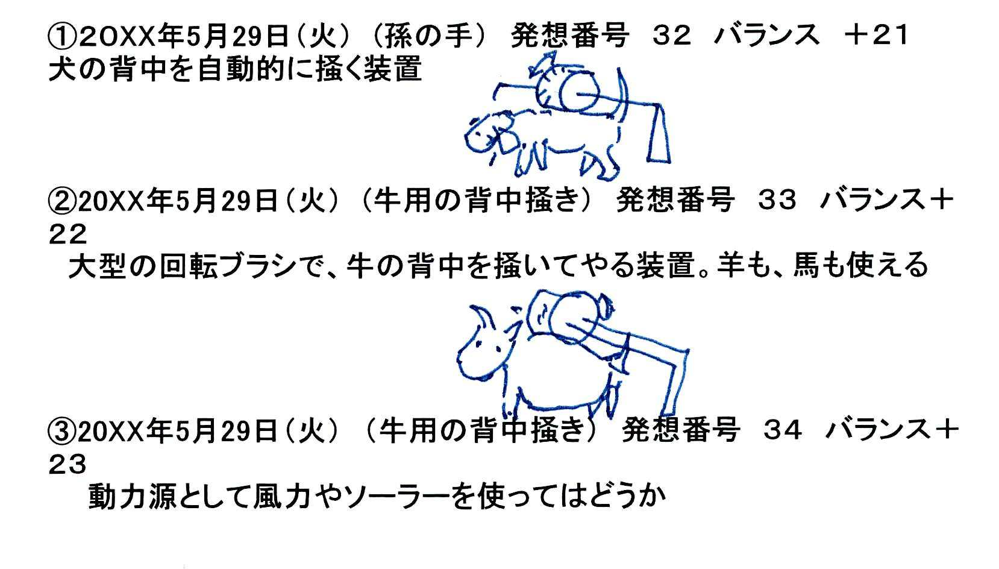
発想コーナー
「エッセイ習慣」
二年間ネパール語を学ぶために、友人の大学の先生の教え子がカトマンドゥに来ました。彼女がカトマンドウに到着した次の日に、私は「これから、ネパールに滞在している間、毎日、一二〇〇字のエッセイを一つ書いてごらん」とアドバイスしたのです。
彼女は、書き始め、書き続けました。そして帰国するまでに、三つのことを手に入れたのです。ネパール語の語学、エッセイのネタを探してのネパールの文化、そして最高に素晴らしいのは、数百本のエッセイを書く中で、彼女は自分の文体を見つけて帰国していきました。
◆ポイント
①
先述のアイデアマラソンの発想記述の最低限必要な四項目（①
発想を出した日、②
発想の分類、③
発想番号、④
発想内容の説明）に加えて、ノートには、その日（またはその週）に何個出したかを書いても良い。
②
一日に一個発想を出すと決めている場合、その日までに出した発想で、何日分先に進んでいるかが分かるように、「＋
三十五」のようにプラスの数字を表示する。
③
できれば最初の一か月の間に六〇個の発想を溜めてください。つまリプラス三〇個になります。また、ニか月で一〇〇個を出してください。ここまで行けば、あとはいくらでも発想が出るようになります。
◆プラクティス
孫の手の新種を考えましょう。例えば、「孫の手の付いた椅子」、「孫の手の付いたソファー」で、「リモコンで掻ける」「背中を見ながら掻ける工夫」「会議中に背中を掻ける孫の手付きボールペン」「風呂に孫の手」「シャワーに孫の手」など、まだまだあります。「いつも背中を掻いてほしいと言っていた父親の墓石を、ＩＴ技術を駆使して掻いてやるシステム」など、奇想天外な孫の手を考えましょう。
アイデアマラソン格言集
●今日発想を出さなければ、明日も発想は出にくい。
●思考しなければ、脳は錆付く。
●発想すれば自信が付き、自信が付くと、もっと発想が出る。
●今考えている細かいことは、一年後に見るとすごい発想だと思うに違いない。
●発想の欠如を嘆く時が発想を出すチャンス。
ほとんどの人は、新しい発想を出すなんてことはとても難しい、また自分にはそんな能力がないと思い込んでいます。そのために初めから発想を出そうと試みないのです。出せるか出せないかの自間をする前に、自分の発想能力のことですから、まず出してみようと考える必要があります。脳は考えると何かを思いつくようになっています。
発想を出そうとすることは、肉体的苦痛を伴うものでもありません。単に頭を使うことに過ぎないのです。頭を使うことに弊害があるとは思えません。使えば使うだけ良くなるのが頭で、使わないと退化します。
本人が自分で出せないと思い込んでいる限りは、やっぱり発想は出てきません。出ていても、それを自分の発想だと思う意識、自己発想の確立の意欲がないと、そのまま見過ごしてしまうのです。
アイデアマラソンは、「頭のフィットネス・クラブ」であると思います。まず始めてみて、毎日続けることです。自分に合った内容、領域、時間を考えて、頭を運動させることで、頭脳を鍛えることが可能になるのです。一日二日では効果はありません。ただ毎日発想を書き続けていれば、少しずつ効果の出ていることに気が付きます。
毎日、数十個の発想を書き留めることは、最初からは不可能だと思います。一時的にたくさん出すことは、もちろん可能です。しかし、時々集中してたくさん発想を出し、その他の日々は全く発想を意識しないというのは、かなり難しいことです。
それよりも、常に少なくても発想モードを保っておいて、必要な時には思い切ってたくさん出すのが自然で楽なことです。毎日、数個を書き留めておくだけで、この発想モードが出来上がっていくのが、アイデアマラソンの大きな特徴です。
実際の仕事や生活では、私たちは様々な工夫をしています。少しでも段取りを良くしようとすることなどは、間違いなく発想なのです。ビジネスの三割は段取りを自分で考える時間だといいます。またあとの三割が誰かと打ち合わせをする時間です。より良い予定や段取りを工夫したり、打ち合わせをする時、それは発想を出しているに違いありません。
「今日の会議で結構面白い提案を出した」というなら、それを今日の発想として、ノートに書いておけばいいのです。出しっぱなしにしておくよりも、自分の発想として記録を残すことで、自分の発想を更に発展させるための基礎にするということです。
発想というと、大発明のようなもので、完全装備で提案されるべきものであると想像されるかもしれませんが、実際は、小さな発想が積もり積もって、大きな発想、重要な発想につながっていくものです
。もっと気楽に、気軽に書き留めておこうとするのがアイデアマラソンです。
【発想例】新しいお風呂
「風呂」についての発想を考えてみてください。新しいお風呂、変わったお風呂を考えてみましよう。実現性についてとか、それを作ったら売れるか売れないかなどは、心配することはありません。とてつもない風呂を考えてみることも面白いと思います。
例えば、『一定の振動をする風呂』はどうでしようか。振動には心地よい振動があります。空調の効いた電車の座席では眠たくなります。それには振動も関係しているでしよう。夜行列車、大型の航空機の振動を真似ることも可能です。風呂全体をロッキングさせて、『ロッキング風呂』にしたり、『風呂の片側をリクライニングにする』ことも考えられます。湯船そのものをリクライニングにできる『リクライニング・バスタブ』。
『カプセルベッドのようなカプセル風呂』にすれば、必要なお湯が少なくて済みます。それも『斜めの一人用浴槽』であれば、多少出入りに苦労するかもしれませんが、実現は可能です。
風呂の中に椅子を置ける『風呂の中の椅子』や「ジェット泡の出る風呂の水中の椅子』、『風呂の中で漕げる運動用自転車ペダル』『風呂場内の強力水鉄砲とからくり標的』『風呂の中で遊べる二人用ゲーム』『風呂の中で遊べる防水将棋』。
一番、楽に発想が出るのは、あなたが「欲しいなあ」と思っているものを想像することだと思います。
発想コーナー
「出ると信じれば」
脳の中には、私たちがコントロールできない、私たちよりも多少上位の何か取り仕切っているシステムがあるようです。この取り仕切っているものは、私たちの思考の実態を知っているのですから、私たちが思考することを希望しなければ、脳に思考の活動をさせないのです。「新しい発想が欲しい」と、本人が希望しなければ、脳は発想を出してきません。逆に、本人が何かを思いつきたいと考えていると、脳が「こんなのでいかが」と、面白い発想を提示するのです。
◆ポイント
①
まず、絶対に一日に最低一個の発想を出すと決めなければ、話が始まりません。最初の発想は、「アイデアマラソンを開始して、今日から発想を最低一個ずつ出し、ノートに書く」という決意です。
②
「わー、何とか、何か出してくれ」と、あなたが自分の脳に必死に懇願して、働きかけると、こんなのでいかがかな」とソロリと、脳は発想を出してきます。これが人間の脳のすごいところです。
③
身近なもので、発想の練習を続けるのです。特定分野の発想がいくらでも出るようになると、自信を持てるようになります。
④
発想することは、「頭のフィットネス・クラブ」に属することですから、せめて数か月は努力してみることが必要です。
◆プラクティス
お風呂で何か新しいことをするという発想を出してください。お風呂で出ない場合は、仕方がありません。トイレでは出るかもしれません。
最近、たまたま出てきたヨメサンの大学時代のノートを見て驚きました。
彼女のノートは、数色の色鉛筆を使って、綺麗に区分、図解され、整理整頓されているのです。ヨメサンは、ノートをまとめながら理解する勉強をしていたのでした。
「これじゃ、私のようなノートの整理整頓が不得手で、字はミミズで、自分でも見る気にならないほどで、まとめても覚えない者は、到底勝てないなあ。きちんとまとめる女の子が、クラスにはいるものだ。それがまた、よく勉強ができるんだよね」と、つくづく考えさせられました。
〔１〕考えるノート、覚えるノート
私の学生時代のノートには、二つの種類がありました。
一つは、分厚い大学ノートで、私はそのノートに、英語も、古文も、数学も書きなぐって、自分の脳みそに刻み込むように書き続けていたのです。ノートはたくさん残っても、書いたものはすべて残す内容は無味乾燥でした。暗記に専念するためのノートであり、発想するため、考えるためのノートではありませんでした。
今でこそ、私は「ノート、ノート」と騒いで、発想をすべてノートに書き込むことを主張していますが、当時ノートは、暗記するための補助手段に過ぎなかったのです。
もう一つは、小さなメモノートで、高校時代から私の思ったこと、読んだ本の感想、大事な言葉などを書き込んだものです。いつもポケットに一冊か二冊を入れていて、ボロボロになるまで持ち歩いていたものです。
汚い字で書きなぐってあって、自分の意見だけでなく、青春の読書の中で感激した言葉も書き写していました。
ところがこれらのメモは、今、数冊しか残っていません。それは連続的なノートではなかったからです。使用開始の日時もなく、途中で終わって白紙のもたくさんありました。
今となっては、これらのメモ帳も残しておきたかったと思っています。私のアイデアマラソンの非常に重要なポイントは、一冊の連続ノートに固執
することです。発想をたくさん書いていくと、当然ながら限られた頁数を超えてしまいます。
〔２〕ノートは外の脳
ノートに書く行為の思考と、キーボードで書く行為の思考とは、少し違っているようです。キーボードはいつでも修正可能で、前に書いたものは、削除か上書きできますが、ノートでは追加・訂正記載となるのです。
ノートに私たちが書くのは、考えたものを書くだけでなく、自分の脳の働きを補助する役目をします。脳は色々なことを考えますが、同時に覚えるという役目をするのです。ちょうど、コンピューターのＣＰＵとハードディスクを兼ねるようなものです。
脳による記憶の努力には相当なエネルギーと時間を食います。記憶することばかりに脳が注力をしていると、発想部分の速度が落ちるのは当然で、長く脳の記憶効果だけに傾注していると、思考や発想そのものが不得手で面倒になってしまいます。
脳を記憶の重圧から解放し、新しい思考に専念するためには、思いついたことをすなわちノートに書くことです。ノートに発想を書き終えることによって、脳の思考機能を高めることができます。まさにノートは脳の外の記憶装置であるということです。
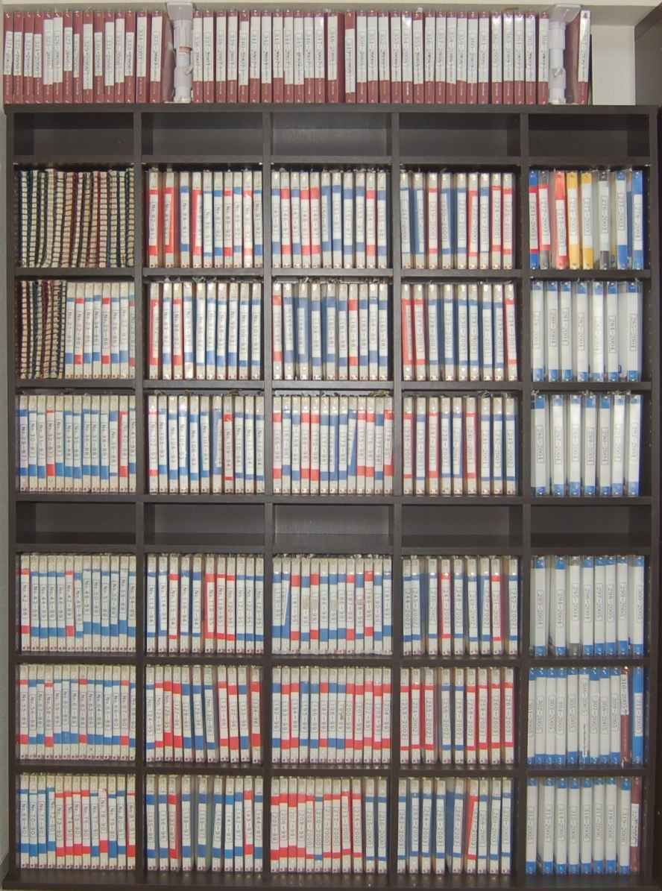
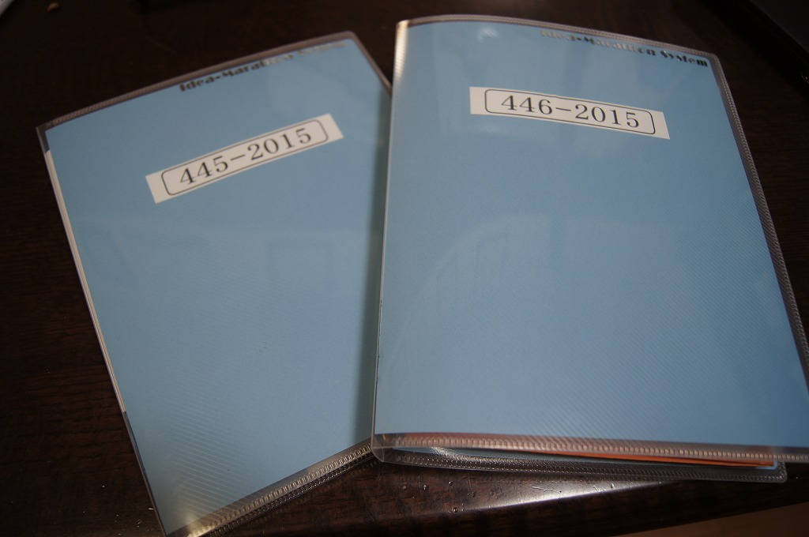
〔３〕ビジネスのためのノート術
通信会社の営業の部長時代、毎年入社して配属されてくる何人かの新人たちの着任の日に、いつも一冊のファイルノートを贈っていました。「毎日、仕事が終わったら、その日に体験したこと、見たこと、感じたことを、このノートの一枚に、びっしりと書きなさい。決して頁の空白を作ってはいけない。そして、私に見せなさい」と指示していました。
私と次長は、新人たちの毎日書いてくるノートの業務日記を読み、下に「頑張ったね」とか、「それはとても大切だ」とか、「あまり調子に乗ってはいけないよ」という風にコメントを書いたのです。
新人の場合、三か月間は、毎日日記を書かせて、私は読んでいました。三か月ほどすると、見違えるほど、仕事の中身を理解する文を書くようになり、鋭い観点を見せるようになるのです。彼らは社内の様々な研修に行き、その議事録もびっしりと書きます。ちょうど議事録が業務日記になるから、必死に書いていたようです。資料もノートに貼ったり、入れたり、研修効果は、たった一頁のノートの日記でしたが、効果抜群だったのです。そして、次の年の四月に、新しく配属されてくる新人たちに、去年の新人（もはや営業の第一線の担当）のノートを読ませて、また新しいノートを与えていたのです。三か月間、毎日の業務日記を書く癖を付けると、会社人生の基本の形ができるのです。
〔４〕次世代に何を残すか
私の年齢になると、一体、自分がこの世の中に、子供たち（と、まあ、妻）への愛情以外に何を残すことができるかが、わずかでも気になりだします。子供たちに自主独立を主張してきて、自慢できるほどの財産があるわけではないので、私は自分の信念や考えたことが子供たちや、その子供たちに少しでも伝われば良いと思いました。
私の場合には、過去二〇年以上、一〇〇〇本以上のエッセイや原稿を、パソコンなどの電子データに書き溜めてきていますが、それらエッセイの最初のきっかけや原稿やフレーズはすべて、アイデアマラソン・ノートに残っているのです。
ノートを見れば、その年代に私が何を考えたかが分かる。まさに、私の年代記ノート（クロニクル・ノート）です。
私はどんな仕事をしていても、書いたものをすべて残すことが必要だと考え始めたのです。書いたものをすべて残すためには、ノートを絶対に紛失しないことが大切です。
発想コーナー
「超多機能ファイルノート」
今、使っているアイデアマラソンのノートは、マルマン社製のＡ５ファイルノート(ルーズリーフ）です。このファイルノートに、次のような機能を持たせています。
①
アイデアマラソンのノート
②
住所録と電話番号簿
③
プラナー
④
日記
⑤
クリアファイルポケット
⑥
スクラップブックポケット
このノートが一冊とペンがあれば、私はどこででも仕事ができ、発想活動ができるのです。
◆ポイント
①
私のノートはＡ５サイズ。私たちの頭とほぼ同じ大きさで、ノートを前にした時に、一日で内容を見ることができます。
②
ノートはＡ５でなくても構いません。Ａ４のほうがたくさん書けます。しかし、Ａ４のノートは、非常にかさばるのです。食事に行ったテーブルにＡ４のノートを置いてみると、すぐに分かります。
③
ノートはＡ５より小さくても構いません。手帳でも良いのですが、発想とその絵を手書きで書くと、手帳のようなノートではすぐに終わってしまいます。小さいと、置き忘れる率が相当高くなることも注意です。
④
ノートには、必ず、自分の連絡先、電話番号などを書いておくことが大切です。
◆プラクティス
今まで自分の使ってきた手帳やノートを集めて、それらを保全しましょう。新しいファイルノートの背に「001-201X」と記載します。アイデアマラソンを、今日から本格的に開始するのです。
発想コーナー
鬼に金棒、発想に絵です。
どんなにごたごた、くどくどと説明を書くよりも、簡単な絵を描くことで、発想は極めて自明になります。
私がＡ５サイズのファイルノートをアイデアマラソンとして提唱しているのは、発想を文として詳しく書くよりも、それに手書きの絵を追加できるメリットが大きいという理由があるからです。手帳では自由に絵を描けません。
アイデアマラソンでは、なるべく短く説明を書くことを勧めていますから、ついつい短すぎる説明になってしまいます。あとになって、自分でも「これはどういう意味なんだ」と、考え込むことがあります。
私はエジソンのノートを見学しに、米国のエジソン歴史博物館に行きました。特別に頼んで、厳重に地下の大金庫に保管されているエジソンのノート、つまりエジソンペーパーを見せてもらったのです。エジソンペーパーは、米国の国宝です。
エジソンは数多くの偉大な発明をしましたが、同時に研究所というシステムを確立したのです。集団の研究者が、課題を与えられて研究を始めて、目的を達成していくという現在の研究所の基本がここにあります。
研究者を個人から集団にし、目的を決めて研究にかかるシステムや、研究の成果を知的所有権として守っていく姿勢は、エジソンによって初めて確立されたといえます。
エジソンのノートは数千冊もあります。多数のノートはエジソンだけが書いたものでなく、エジソンの研究所の所員が一緒になって書き込んだ、研究所全体の汗の結晶なのです。
エジソンの最初のノートは、小さな手帳でした。まだエジソンが駅か汽車の中でアルバイトをしていた頃の手帳で、最初の頁は小遣い帳か家計簿になっていました。
その後、エジソンも大きなノートのほうが良いと思ったのです。今のＡ４よりも大きなノートに変わりました。心理的にも、大きなノートだと、
○ 失わない
○ たくさん書ける
○ 持ち出されにくい
○ 何人かで一緒に書ける
○ 立派に見える
といったところでしょう。
ノートには絵が一杯描かれていました。ところが、次に出てきたノートを見て驚いたのです。エジソンがその後、エジソン研究所の標準サイズにしたノートです。
それは今の私のアイデアマラソン・ノートと同じＡ５サイズに近い大きさのノートだったのです。これには文と絵が混ざっていました。
Ａ５のノート以外に変形Ａ３のノートが研究所の中で使われています。エジソンは実に絵が上手だったのです。エジソンにとってはまず絵から始まったようです。
例えば、私がアイデアマラソンを指導し、開始し、継続しているヴァージニア大学のカールソン教授は、歴史技術工学の専門家ですが、彼の研究によると、エジソンが描き残している電話機のスケッチだけでも数百あるそうです。教授は、どのようにエジソンの頭の中で、進化していったか分析しようと試みました。
エジソンが残した数多くのスケッチは、いずれも素晴らしいスケッチです。エジソンのスケッチは設計図のように美しいものでした。ところが電話機に関しては、逆の現象が起こっていました。エジソンはスケッチだけをたくさん描き残したのです。注釈も、説明も付けないで、スケッチだけがノートに描かれていることから、後世から見ると何のことか、何のスケッチかさっぱり分からないということになってしまうのです。
エジソンの膨大な数のノートは、エジソン歴史博物館の地下の大金庫に保管されています。エジソンが考えた発想の中で、当時の素材では実現できなかった（いまだにユニークな）発明が、絵だけのままで、まだ眠っている可能性もあると思います。
アイデアマラソンを続けていると、頭の中でその発想の完成した姿が思い浮かぶようになります。発想の具象化に強くなるのです。
「グラハム・ベルのノート」
エジソンのノートを見た後、スミソニアン博物館で、グラハム・ベルのノートを見ました。これも偉大です。数百冊のノートに級密な挿絵が一杯描かれていました。エジソンの絵と比べて、グラハム・ベルの挿絵は、すごく詳しく、自明の説明が付いていました。彼のノートはまさにアイデアマラソン・ノートでした。
◆ポイント
①
発想の説明はなるべく短くして、絵を描きましょう。
②
ビル、車、自転車、これからの世界ではロボットの絵は面白いデザインの対象となります。
③
挿絵には線を引き出して部品の名前を書きましょう。
◆プラクティス
①
新しいデザインの冷蔵庫の扉を描いてください。
②
新しいデザインのミシンを描いてください。
③
面白いノートや変わったノートがあることを聞いたら、本書の著者に知らせてください。
アイデアマラソンでは、思いついた発想を短く、簡潔に書くことを勧めています。
人間の頭の中で思考は、細い繊維をたくさん織り込んだ糸のように、色々な内容が、切れるようで切れないでずらずらと連なっているのです。これをすべて記録として書き残すことは、果てしない思考の除路にはまってしまって、ドストエフスキーの小説のように難解になってしまいます。
人間の頭の中では、思考は自己完結しないで、次の思考が始まってしまうことが多いのです。そして、前の思考は簡単に忘却の向こう側に流されていくのです。脳は、不完全な思考で始めて、不完全な思考で終わり、次の思考に進むのです。アイデアマラソンで書き留めることは、細切れにしたうえで、ロジカルにも、文としても、一応、完全なものにすることで、思考の流れが発想に生まれ変わるのです。
私が提案してきたアイデアマラソンでは、発想をできるだけ小刻みにして、自己完結させ、終結させることが、頭脳の整理整頓のためには、極めて重要なプロセスであるとしています。
小刻みに考えるだけでも、私たちの頭脳の働きには、大いに役に立つと思いますが、ましてやその小刻みにしたものを書き留めることができれば、頭脳にとっては素晴らしい脳外知性になります。
アイデアマラソンで、小刻みを提案したのは、もとはといえば、発想の数を増やすという極めて「せこい」理由です。毎日、毎日、発想を出すのですが、「出てしまった発想は、その日に記録すること」という理由で、今日三個出して、明日が出ないというのも長期間には許されるのです。
「自己完結しているならば、発想としよう。発想の分子のようなものであれば、それだけでも発想として認めよう」ということです。更に細かく発想を、小さく、自己完結で、切り刻めないか、考えることが、脳の働きを助けます。
更に、浮かんだのがグッズに関するアイデアならば、頭の中でその形状をイメージしてみようということです。このようなことを脳は一瞬にして思いつきます。
この章を、週末にカトマンドウ郊外のカフェで、ノートＰＣを使って書き込んでいますが、そのＰＣの電池に残容量不足が出てきます。
「しまった。電源アダプターを持ってくれば良かった」と思うのです。
電源アダブターも昔から比べれば少しはサイズが小さくなったようですが、それでもまだまだ重く、大きなものです。ノートＰＣにとって、電源アダプターと電源コードは、へその緒を付けたまま走り回っているよちよち歩きの赤ちゃんのように見えます。お母さん電源に縛られているのです。
ふっと思いついたのが、電話のモジュラージャックが一二ボルトの電源を持っているので、その電源をＰＣで使えないかという「電話モジュラーＰＣ電源コード」です。
また、ＡＣしか使えないためＤＣに切り替える必要があるので、住宅に、ＡＣ電源以外に交流の一二ボルトの電源を共用で使える配線をする「家庭用ＤＣ電源システム」の発想です。こうなると、電話用電源に大量の電流が通ることになり、電話会社が一種の電力会社のような形になります。直流の電力会社というコンセプトも考えられます。エジソンが最初に建設した発電所は直流でした。
自宅でノートＰＣを使う場合に、テーブルの上のどこに置いても、電池にコードレスで充電できる「充電アダプター内蔵型テーブル」などが、次々に発想として浮かんできます。
電源アダプターはほのかに温かいと思います。この熱を使って「コーヒーカップ保温器」にしてはどうでしょうか。
これらを一つ一つ、小刻みにして、アイデアマラソン・ノートに記帳するのです。
「大切なのは類似」
アナロジーとは類似の連想です。同じようなものをどんどん出すことも、しりとりのように発想を連続させて出していく手法も、発想を多産させるためには極めて有効です。一部類似、一部置き換え、反対側、ねじまげ、ごりおし、こじつけなど、同じ素材で当てはまるかどうかを実験してみましょう。
◆ポイント
①
自己完結している限り、発想を小刻みにする。
②
脳にとっては、ノートの小刻み表示ほど、理解しやすい脳外の整理整頓はありません。
③
発想を一個出すと、せっかくだから類似、一部類似、素材を変えてみる、反対側の発想、ねじまげなどを考えてみる。必ずそこにも新しい惑星を見いだすことができるでしよう。
◆プラクティス
電源アダプターに、燃えにくい・ぬいぐるみを付けるとすれば、どのような人形が良いか三つ考えてください。
「どんな発想でも構わないので考えてください」と言われると、戸惑う人は多いかもしれません。
本書では、アイデアマラソンがいかに柔軟なシステムであるかを説明してきました。アイデアマラソンを実行する人は、自分の周辺に合わせて発想を考えていけば良いのですが、それだけでは発想のきっかけが掴めないかもしれません。
私自身の発想を分析して、出し方の分類と、発想の枠を広げていく方法を説明したいと思います。腕時計での発想例で、私の頭の動きをご理解ください。ここで提示します発想は、この一文を書いている時にたまたまノートに書き留めたもので、優れた発想であるとも思いませんし、それを実現しようとするものでもありません。
この文を書いたのは、エア・インディアのカトマンドゥからデリーまでの約一時間の機内です。かなり古くなったエアバス三〇〇の機内で、私は少しでもヒマラヤ連峰を見るために右側の窓に座って、ノートを開いていました。離陸時に少し揺れました。
中央部の座席には中年の夫婦が座っていました。彼らもやはり少し不安なのか、奥さんが右側に座ったこ主人の左手首を握っているのが見えて、印象的でした。そこで私が思いついたのは（笑わないでください）
①
男性の左腕手首を（マネキンの手のように）ぐっと握っている形の腕時計。いや、握り時計。
（基本発想‥これが一連の発想群のスターターになるのですが、これを書いた時点ではまだ、どのような展開があるかは分かりません。これをさっと書いた後は、とにかくこの男性の手首を握っている形のマネキンの手首を想像して、これをどのように展開するかを考えます）
②
それを美しい女性の手首にして、その手首に付いている腕時計で時間を見る。
（数稼ぎ発想...これはもう単に、せこく発想の数を稼ぐための発想です。取り付いた手首に付いている腕時計は女性用の時計かどうかを考えました）
③
手首は自由な方向に動かすことができる。
（時間稼ぎ発想‥これも単に数稼ぎ）
④
手首の中にＭＤ、ラジオを付ける。
（強制合体発想‥これは他の電子機器との組み合わせで、バリエーションを付けているのですが、それでもこのマネキン手首が色々なものに広がっていく予感を感じさせるものです）
⑤
手首のばっさりと切られた切り口にスピーカー。
（強制合体の数稼ぎ発想‥これで順調に発想の数を増やすための∃
コシマな考えが軌道に乗り始めているのが分かります。ここまでですでに五個の発想を出したことになるのです。「なーんだ、そんなことをして、数を増やしているのだな」と思われるでしょうが、これでもまだまだ展開の第一段階です）
⑥
手首の切り□に液晶テレビ。
（数稼ぎ...すみません。こ参考まで）
⑦
握りアラーム時計。
（アラームタイマーの時には、強く握る）
⑧
握り手首のポシェット。
（展開発想‥更に別の商品に広げていく）
⑨
握っている手首の人差し指が動く（玩具）。
（展開発想 多少、おどろおどろしいところがあります）
⑩
握っている美しい（？）若い女性の手首の人差し指が、男性の手の甲をそっとなでる。
（過剰想像発想...思うだけでセクシーではないですか。マニキュアが光っていて、シリコン系の人造皮膚でタッチも本物そっくりです）
⑪
ロボットの金属光沢の手首。
（付属発想 単に数稼ぎです）
⑫
人の手首に噛み付いている犬の人形のバッグ。
（ピーク発想 この発想くらいが一番現実の商品になりうる可能性を持っていて、これがこの手首シリーズのピークになります）
⑬
ワニが噛み付いている手提げ袋。
（ピーク発想の数稼ぎ発想）
⑭
手首に小さな天使の二枚の翼を生やす。
（変化球発想‥これは何かの飾りになるかなと思います。案外面白いのではないでしょうか）
⑮
手首に早期警戒機（エーワックス）のキノコのような回転アンテナ。
（専門的展開...エーワックス。ボーイング七〇七の屋根の上に巨大なお盆のような回転アンテナを置いた米空軍の早期警戒偵察機です）
⑯
手首から飛び出した形の台に取り付けられた時計、ＭＤ、携帯装着台など。
（二番煎じ発想...もうここまで同じようなものを書くとなると、多少、恥さらし的なところもありますが‥‥）
⑰
左腕輪に取り付けたキノコ型の時計。
（遠ざかる発想...これでかなり最初の発想からは離れていきます。いよいよ終息に近くなってきています）
ここで見ていただいた発想の展開は、今日、今、私のノートに書いた発想をそのままリアルタイムで開陳しています。
気ままに自分の思ったように発想を広げていき、小刻みにノートに書くことで、発想の訓練を自分でやっていくのです。
先述した一七個の一発想のうち、どれが実用化されるかとか、どれがすでに実用化されているかは、アイデアマラソンのレベルでは心配する必要はありません。
自分がオリジナルであると考えることと、特許とは別の問題と考えてください。
発想コーナー
「基本発想」
最初の基本発想は、連想から来ているのです。連想はどこから来るかといえば、純粋にはあなたの頭の中にあります。アイデアマラソンの練習をすればするほど、連想に鋭敏になってくるのです。
◆ポイント
①
周りを見渡し、ネタを探す。雑誌でも、周りの人々でも、新聞でも、折り込みでも構いません。
②
まずはどんなことでも良いから、基本発想を入手しようと必死になります。
③
基本発想が手に入ると、手段を選ばず、発想の数をこじつけてでも、多くしていく努力をします。
④
類似商品を考えたり、真反対を考えたり、一部を取り替えたり、他の機能を持たせることを考えます。
⑤
基本発想が必ずしも、基本でなく、単に新たな出発点になる発想であるかもしれません。そんな時は基本の発想にいったん戻ります。
⑥
一つの基本発想が出たら、何とかそれから最低一〇個程度の追加発想が出るように頑張ってみます。
◆プラクティス
新しいマネキンを考えてください。例えば、「ロボットになっているマネキン」とか、「ペットのマネキン」など。
アイデアマラソン格言集②
○ 人には自分の出した思いつきで発奮する瞬間がある。
○ 継続さえしていれば、必ず良い発想が出る。
○ 発想は星のごとくある。光っているものも、暗いものも。
○ 発想は、ノートに書き、他人に見せて磨かれる。
○ 小さな、くだらない発想を敷き詰めた道路を、偉大な発想が進む。
アイデアマラソンが生活の習慣になると、実に様々な場所で発想を出すことが可能になります。
領域を決めないで出すのですから、発想を出す環境が変わったほうが出しやすいのです。生活のほとんどの場所で発想を出すこと、つまり思考が可能です。歩きながらでも、電車に乗りながらでも、色々考えれば良いのです。
アイデアマラソンをしている場所を、私は「マイ研究室」と呼んでいます。
私の研究室は、実に多彩で、色々な場所にあります。要は私の行くところ、座るところが、まさに全部研究の場なのです。
自宅はもちろん、風呂も、トイレも、食堂のテーブルも、私にとつては研究の場です。私は家族と話している時も、好奇心一杯の研究者の目つきをしていると思います。通勤時間も、友を待つ喫茶店でも、私は研究室にいるとして、さっとアイデアマラソン・ノートを取り出します。
この章を書くために、実際にそのシチュエーションに自分を置いてみました。またその発想の内容をそのまま書くのは、読者が「ああ、なーんだ、こんなものだったら、私でも出せる」と自信を持っていただくためです。
〔１〕お風呂
お風呂は、最適の発想のチャンスです。せっかくですから、お風呂の前に、私は「何か解決するべき課題」を見つけて、それらを頭の中に持って服を脱ぎます。熱いお湯に浸かりながら、私は課題について考えます。
「風呂の中で遊べる一人ゲーム」「風呂に浮くタングラム」「風呂に浮く五並べ」「風呂のタイル壁の吸盤ダーツ」「お風呂用・親子で遊ぶゲーム盤」などを考えました。
〔２〕「朝シャン発想」
朝シャン（朝のシャワー）は、今日の手帳の日程をさっと見てから、シャワーを浴びるのがコツです。そうすれば一日のシミュレーションがシャワーとともに開始でき、同時に今日の仕事に関しての発想が湧いてきます。
シャワールームに入ると、何かアイデアが浮かぶものなのです。今度は、それらを忘れないように、風呂場から出、頭から消えないうちに、書き留めることが大切です。シャワーの泡と一緒に流れたのではもったいないですから。
シャワーを浴びている時、多数の重要な発想が湧き上がると、私は風呂の扉を少しだけ開けて、子供たちを呼びます。我が家では、子供たちに動物の名前をニックネームとして故意に付けて、それで呼んできました。長男は「牛さん」、二男は「たぬき」、三男は「ネコ」。これは動物愛護の訓練ですが、やはり性格が似ているからです。
「おーいネコ、お前を国連平和維持軍に任命し、重要使命を与える」
「はい、はい、それで」
「悪いけどアイデアを書き留めておいてくれ」
と「生きてるノート」にメモを頼みます。最近ではＩＣレコーダーをジップロックの密閉密閉プラスチックバッグに入れて、お風呂に浮かして発想を録音します。リアルタイムで発想を入れることにしています。
「シャワーに水力自動回転ブラシを付ける」
「シャワーから音楽が流れる」
「シャワーを浴びながら『ダンス・ダンス・レボリューション』（ＴＶゲームと夜の風呂、シャワーは自分の大切な発想の時間で、これはじっくりと考えさせてもらいます。
せっかく、じっくりと腰かけるトイレに、何も読むものを持たないで入るはずがありません。西洋式のトイレになって以来、過去三〇年間以上、トイレとは読書か新聞を読む場所だったのですが、同時に極めて優れた孤独な思考の場所でもあります。
ノートやペンをトイレに落とさないように、忘れないように注意してください。会社のトイレでノートを忘れて、次の人から戻ってきたこともあります。お尻を拭く時も、くれぐれもノートを後ろに置かないように注意。
〔３〕講演会と会議
眠い会議は、絶好の発想場所です。発言している人の意見も書きますが、発言者の意見に自分ではどう思うかも発想として書きます。反論も、異論も、ノートに書き始めると結構眠気が消えます。
講演会をせっかく聞きに行くなら、絶対に一〇個の発想を出さないでは聞き終えないと決意して聞きます。
〔４〕雑誌・新聞
雑誌を見ていても、「あっ、これは別の使い方ができる」「この材料を使えば、あれにも利用できる」「このやり方なら、もう少し進めて、あれが良いなあ」などと考えると、ノートに手が向かいます。
自分が考えたことのある商品が他で実現されると、一種の愛着が生じて、購入しようという気分になるから不思議です。
〔５〕映画館
真っ暗な映画館の中で発想が出ると、胸からボールペンを取り出して、手のひらに書きます。手のひらノートです。最近はＩＣレコーダーに静かに録音します。その時も、三度繰り返して、録音の悪いのを補います。
〔６〕交通機関
夜の電車では、扉のそばで外の光の流れをじっと見詰めながら、考えます。これが結構、じっくりとした発想が浮かぶものです。新幹線も窓から外の流れる遠くの景色を見ながら、発想を思い浮かべます。
例えば、帰宅途中の電車の中で、今日の朝のヨメサンとの口論で、捨て台詞を吐いて家を出てきたのを思い出す。
（くそー、ふざけおって、見ておれ。今晩はぎゃふんと言わせてやる）と。外を見て遠くを走る光が目に入ってくると（まあ、俺も言い過ぎたかな。俺も勝手に買い物をしてしまつたんだし......。まあ、あいつが怒るのは当然か。一言前もって言えば良かったんだ）。この間、遠くの景色の光が走る。（それでも、昔はあんなきつい言い方をする女性じゃなかったな。いつからあんなになったんだ。優しかったのに。三〇年前は、可愛かったな。宇宙人に乗り移られたかな）。窓ガラスの外に雨のしずくがすすすすっと垂れる。こちらの右目にも涙が一粒。（うっ、しようがない。駅で花でも買って帰るか）という風に心の中で急激に変化する。
〔７〕喫茶店・カフェ
町にたくさんあるエスプレッソは、発想のふるさとです。私は一日に二杯は飲みながら数十の発想を考えます。
〔８〕図書館
バブル経済のおかげで美しくなった図書館。これを使わないでは市民として損です。土日はほぼ数時間は滞在して、棚の本を、歩き見ながら流していきます。発想実践の関係の本は、早く見ていきます。その例に出ている発想から関連発想を掴むのです。感動した本、発想がどんどん出てくる本は購入購入します。
〔９〕書店
年間に多数の書籍を購入しているのですから、書店は私の第二の図書館です。ありとあらゆる月刊誌を立ち読みしながら、発想の出てくるものがあると、購入します。
〔10
〕友人たちとの飲み会
私には一ダース以上の発想励起型の友人たちがいて、彼らと夜にでも一杯飲みながら話していると、発想の塊から、ぼろぼろと発想が脳からこぼれ出てくるので、それらを拾っては、ノートに書きます。これほど充実した時間は少ないほどです。このような友人たちが数十人います。とても心強いのです。
〔11
〕就眠中
寝る前、起きる直前、そして寝ている間の眠りが浅くなると、発想が出ます。それらを枕もとに置いているＩＣレコーダーに録音します。重大な発想の時は眠りもへちまもなく、スタンドを点けてノートに書き込みます。夢で考えた発想は意外と少ないのですが、何個かあって、それには「これは夢で考えた」と書き入れています。
毎日、新しいことを頭の中で探すのですから、私の目玉は発想のネタを求めてギラギラしていると思います。実際は、頭の中で、ほわーと浮かんでくる発想の芽をさっと掴むことに、極端に鋭くなっていると思います。
ああ、言い忘れました。色々な研究場所以外に、自分の書斎での研究もあります。
発想コーナー
「待ち時間の転用」
私には待たされ時間が存在しません。飛行場で五時間飛行機が遅れても、ノートがあれば発想を考えるベストチャンス。列車の中も、駅のプラットホームも、喫茶店での待ち合わせも、お客の応接で待っている時も、病院の診察の待合室でも、すべて時間を有効活用できます。こうなると寝ている時間以外はすべて思考の時間です。待たされる時間がなくなると、人生は相当楽しくなります。
◆ポイント
①
すべての時間に頭脳を酷使しよう。
②
いくら考えても脳は疲れない。ノートに書く時に指先が疲れるだけ。
③
ごみのような短い無駄時間を有効活用するだけで、アイデアマラソンは成立する。
◆プラクティス
自分の一日の行動を短く書いてください。
このようなチャートの中の短い時間（くず時間）に、アイデアマラソンの実行の可能性を確認する。
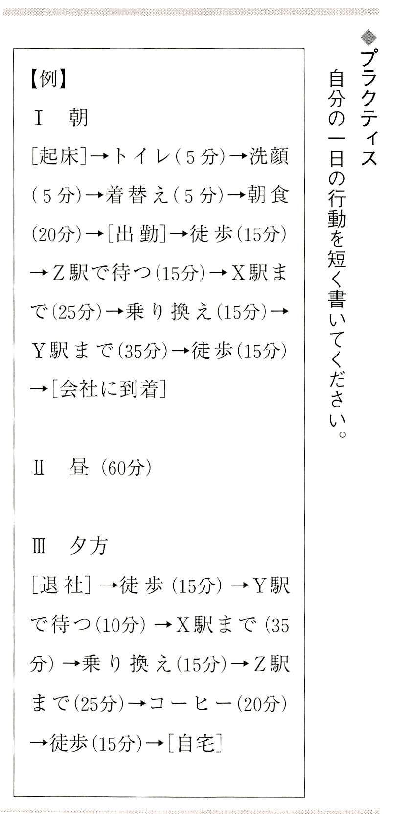
発想にとっては、目からの刺激が一番強いものです。私たちが通勤、通学、買い物などで外出している時、旅行中なども様々なものを見て考えます。
具体例を挙げましょう。
〔１〕通りを歩きながら
目に入ってきた電気屋さんで、冷蔵庫を特売しているとしましょう。冷蔵庫は「白もの」というだけあって、ほとんどが白い色ですが、別の色のものも出ています。最近はテレビ画面やＰＣ画面が付いているものもありますが、冷蔵庫と洗濯機はほとんど昔から形が変わっていません。
冷蔵庫の前の扉なんかは、もっと大きく変わっても良いと思うのですが。
そこでアイデアマラソンが動き始めます。
①
冷蔵庫の扉の外に飾り棚を作る。
②
網の戸の付いた水屋を扉の外に作る。
③
弱冷に適したものを入れる棚。
④
冷蔵庫の外にバーコードリーダー。
⑤
レシート類を入れるファイル。
⑥
小銭を入れる貯金箱。
⑦
大きなデジタル時計かアナログ時計。
⑧
冷蔵庫の扉に家庭用のサーバーＩＰＣを付ける。冷蔵庫でＰＣのＣＰＵを冷やす。
⑨
銀行の金庫のような、潜水艦のハッチのようなハンドルの冷蔵庫ドア。
⑩
冷蔵庫の外に本棚。
⑪
冷蔵庫の後ろに金庫。
⑫
冷蔵庫の扉の外に一輪挿し。
⑬
昔の大名箪笥のような姿の冷蔵庫。
⑭
食品以外の小物用引き出し付き、冷蔵庫。
⑮
冷蔵庫に追加のクールボックスを付けられる。冷蔵庫からフレキシブルパイプで追加ボツクスに冷気を送る。野菜や魚を冷蔵庫に入れる場所がない時に、冷蔵庫から冷気をパイプで取り出して、クールボックスを冷やすことができる。
⑯
冷凍庫も追加を作ることができる。
思いついた発想をどんどん出していくのです。記録の仕方にも色々あります。
〔２〕喫茶店などにいるなら
あなたが喫茶店などで座っているなら、何が何でもノートにきちんと書きましょう。できれば絵も付け加えてください。先述のような発想が、ワーと雨あられのように出ると、もうノートを書きながらでは間に合わないこともあります。それを「発想の嵐」と呼びます。この発想の嵐は、ちょうどカツオ漁の群れに入った漁船のようなもので、一秒でも早くたくさんのカツオを釣り上げる作業に似ています。
そんな時にはノートの端っこに、まず、ちょっとしたメモを書きます。例えば、「大名」「クールボックス」などと書くのです。これだけあればあとでゆっくりと料理できます。
〔３〕バス停で待っているなら
その場で、アイデアマラソン・ノートを手の上に広げて、そのノートに簡単に書き込んでいきます。いつバスが来るか分かりませんし、急ぐ以外に方法なしで、ノートに最短のメモを書き込みます。発想を止めない。薄くてもとにかく広げていきます。
例えば、先述の「冷蔵庫利用のホームＰＣサーバー」「バーコードリーダーから、家庭用のキャッシュレジスター」「銀行連動型家庭用ＰＯＳ」などの考え方は、まだいくらでも発展できます。こんな場合には矢印でも付けておくと良いでしょう。
〔４〕バスに乗ったら
移動時に出る発想は、すべてＩＣレコーダーに録音します。私が使っているのはソニーの製品で、初期の三〇分程度しか録音できなかった機種から、現在のメモリースティックを使った何時間でも録音できるＩＣレコーダー、更にいくつでもファイルを新しく分けることができる機種に至るまで、ほぼ全機種を使ってきました。
ＩＣレコーダーのリストストラップの先に、Ｓ字のクリップを取り付けて、ズボンのベルト通しに引っ掛け、いざという時には、カウボーイのビストルのように、ワンタッチで録音機を片手で取り出して、ブラインドタッチで録音ボタンを押し、思いついた発想を記録できるようにしています。
発想コーナー
「気分が変われば発想も変わる」
アイデアマラソンでは、発想はありとあらゆる場所で出るのですが、大きく二つに分けることができます。
一つは、いつも発想を出す場所です。自宅の机、ドトールやベローチェのエスプレッソ喫茶店、帰途の電車の席などで、これらの場所では、絶対に数個の発想を出すものと脳が覚悟しています。
もう一つは、気分転換で出すので、どこででも発想を出すことができます。旅行中でも、会議中でも、出張の途中でも、飲み会でも、発想は出てくるものです。新しい場所であればあるほど、新しいネタを手に入れて、発想が出るのです。
どこの場所でも、出てくる発想をがっちりと受け止めて、書き留めることが大切です。要はどこでも出てくるということなのです。
◆ポイント
①
通りは発想の渦です。それらを生かすも、殺すも、無視するも、すべて同じあなたの日です。
②
通りでは、どこからネタが目に飛び込んでくるか分かりません。これをさっと素手ですばやく掴むことが「樋口流八双（発想）の構え」です。
③
慣れてくると、探索する目、分析する目ができ、見るものすべてが好奇心の料理材料になります。それがアイデアマラソンのすごい効果です。
◆プラクティス
通りで、何かを見たり、できたりすると、あなたにとって「すごく幸運だ」「運」がいい」というものを勝手に決めます。例えば、
「コーヒーの代金支払いでおつりが必要なかった」
「カラスが鳴きながら上空を横切った」
「車のクラクションの音を聞けた」
あなたにとって験の良いことを三個決めてください。
私が最も発想をたくさん出すのは雑誌からです。月刊誌です。
雑誌を見ながら、発想をどんどん出していきます。モノ関係の雑誌では、調子が出てくると、私は写真一枚から五個、一〇個と発想を出すことがあります。一冊の雑誌で数百の発想を思いつき、ノートに書き込んで、数日置いて、再度その雑誌を見直して、またまた数十の発想を手に入れることもあります。
これを「熟させる」と呼びます。一番出汁、二番出汁のようですが、最初に見ていた時には分からなかったことでも、二回目に雑誌を見て、新たな発想のネタを見つけることがあります。集中度が関係しているのかもしれません。
雑誌からの連想やアナロジー、他のものとの結合、比較など、様々な要因を駆使して発想を出していきます。発想とは、頭の中で、色々なファクターを強引に引き寄せて作り上げるファンタジーです。
日本では、雑誌間の激しい競争意識があり、毎回全力を投入して斬新な発想を誌面に反映させようと努力しているのが分かります。
特に面白いのはモノ関係の雑誌、『モノマガジン』『ビギン』『ダイム』『ペン』などで、その他では科学雑誌の『ニュートン』『日経サイエンス』なども外せません。その他、『日経トレンディ』などトレンディ雑誌、東洋経済、日経ビジネス、ダイヤモンド、プレジデントも面白い素材になります。
アイデアマラソンを継続しようとする場合には、これらの雑誌から発想誘発要因を得ようとするのは当然です。
【発想例】 雑誌からの発想
例えば、日刊工業新聞社の発行している雑誌に特集として『相次ぐ事件・事故に歯止めを！「失敗学」入門』という記事が出ていました。
この失敗学という記事で、次のような発想を誘発されました。
①
自身の「失敗学」を研究する。
②
自分の過去の様々な失敗をリストアップする。
③
それらのリストアップされた失敗が、自分の責任から生じたものか、あるいは運が悪かったのか、他の要因によるものなのかを考えてみる。
④
それらの失敗が、失敗の後、教訓や改善につながるなど、後には良い結果を生み出すことになったかを考える。
さっそく、私はアイデアマラソン・ノートに、
①
「自分の失敗の歴史をリストアップしよう」
と、関連発想を書き込んでいます。
単に失敗と言っても、個人の場合には、いくつかに分類する必要がありますから、
②
「個人の失敗は、仕事の失敗とプライベートな失敗に分ける」
③
「交通事故の歴史」
④
「仕事で注文を逃したものは」
⑤
「人間関係での失敗は」
⑥
「金銭的な失敗は」
⑦
「買い物での失敗は」
などと、分類が広がっていきました。私のアイデアマラソン・ノートには、あえてこれらの失敗の歴史を分類した後で、リストアップをしていきました。
全部の失敗リストを書いてみて、意外に思いました「あんなに、過去の生活では色々なストレスに悩まされ、失敗だらけだと思っていたのに、今振り返って、「失敗したリストは？」と真剣に自分で探してみると、そんなにたくさんはないのです。
おまけにリストアップした「失敗の歴史」は、あとになってその失敗がきっかけになって、自分の改善につながったり、逆に良い結果が出て、失敗を相殺しているものまであることに気がつきました。
家族の中で、これらの失敗を自由に全部話せるかどうかは分かりませんが、話ができるとすると、今となっては笑い飛ばせるものもたくさんあるかもしれません。
寝ている子を起こすことは良くないかもしれませんが、失敗学では、同じ失敗だけは起こさないことが基本になっていて、私の場合には、交通事故を考えると、自分で車を運転するのが昔ほど気乗りしなくなってしまったようです。誰もがこの失敗学では学べるのではないでしようか。
ソフトやコンセプトを雑誌から学ぶこともできますが、モノ関係の雑誌ならば、新商品の写真一枚からでも、あなた自身の新しい発想をどんどん創り出すことができます。
発想コーナー
「月刊誌か週刊誌か」
発想を誘発してくれるのは月刊誌です。月刊誌は、とにかく激しい競争の中から、編集方針、テーマ、それらの掘り下げをしていることから、編集部の狙いに同調することができれば、あなた自身が関連の発想を創り出すことができるのです。週刊誌はどうしても毎週出さなければならないという宿命から、単独の記述がほとんどで、内容の掘り下げが不足します。しかし、問題の変化と流れを掴むには週刊誌が面白いかもしれません。
◆ポイント
①
私は一冊の月刊誌からは、少なくとも数十の発想を創り出すことにしています。
②
雑誌も、三度、間を置いて見ると、違った視点から見ることができます。
③
一つの写真、一つのテーマで、あなたが発想を小刻みに出し始めたら、その写真から出た発想の数を、ペンで印を付け、「正」の字を書きます。
④
雑誌を立ち読みしていて、たくさん発想が出てきたら、それらの発想をなくさないようにして、その雑誌を購入します。
◆プラクティス
あなたの失敗の歴史をノートに書いてみてください。それについて、「今振り返ってみると、それが良かったか、悪かったか......」というあなたのコメントを付けてください。
私たちの生活の中で、長い通勤時間ほど、もったいない時間はありません。往復に三時間をかけることで、年間にして一か月強の時間を通勤に費やしていることになります。特に私のように海外生活が長く、海外での通勤時間の短さを知ったうえで日本を考えると、本当に嫌になります。
この通勤時間を有効活用することで、非常に大きな差ができます。司法試験や公認会計士の試験でも、通勤の時間で勉強した人はたくさんいるだろうと思います。
この通勤時間の超混雑の中というのが、「閉鎖的オープンスペースにおける孤独な集中学習法」には最適なのです。ただ、車内がぎゅうぎゆう詰めすぎると動きが取れませんので、三〇分早く家を出てでも始発駅まで行くとか、少しは空いている時間帯を選ぶなどの工夫をすることが必要でしょう。
今ならば、間違いなく私は通勤時にアイデアマラソンを実行するだろうと思います。左手にＩＣレコーダーを握って、思いついた発想を録音します。
ただし相当の勇気が必要です。（このおっちゃん、何やってるんだ）という顔をされます。
三〇分間の電車で、発想が一〇個出れば、三〇分が有効活用されたと考えることが可能です。窓から見える外の景色がそれなりに刺激になるのです。
注意しなければならないのは、ＩＣレコーダーを録音する場所としては、電車の中は周辺の雑音がかなりうるさいので、三度同じ発想を繰り返して録音すること
がポイントです。
発想コーナー
「閉鎖的オープンスペースにおける孤独な集中学習法」
私は長距離の列車（もちろん座れないと駄目です）とか、航空機内は最高の勉強空間だと考えています。特に飛行機のような動きの取れない空間は、最高の「閉鎖的オープンスペースにおける孤独な集中学習法」の場であるということです。
「列車の通勤時間三〇分を、ずっと寝ている」という人の場合、確かに寝ているのは気分の良いことです。しかし、一五分程度ならば疲れが消えますが、三〇分も寝てしまうと、起きた後、逆に疲れてしまうことが多いのです。
「最初の一五分を寝て、残りの時間は勉強すれば良い」と言われます。しかし一五分寝た後で電車の中のトイレにでも行ければ大文夫ですが、それ以外では目がしゃきっとしません。もし座れることが確実ならば、絞って凍らせた小さなタオルを、濡れた傘用の小型バッグに入れて用意しておき、それでおもむろに顔を拭いて、それから勉強なり、アイデアマラソンなりを始めましょう。
◆ポイント
①
通勤時間の最短化、最良化、最適化を再度考えてみる。
②
二〇分早く出て、会社にいつもより三〇分早く着くなら、会社の近くの喫茶店で、アイデアマラソンを粘りましょう。
③
通勤時間は自分の時間。会社の問を出たら自分の時間。歩きながらでもＩＣレコーダーは使える。暗闇でも使える。
④
帰途は、惰性で飲まずに、喫茶店で発想を数個出して帰宅しよう。思いついた内容は家族に説明し直してみよう。すると発想が分岐して数が増えます。
◆プラクティス
通勤時間が最大の未着手埋蔵時間資源であるならば、いつでも遅くはない。何をするかを考えよう。
一日に本を一体、何冊読めるでしょうか？
私は二四時間をかけて、これに挑戦したことがあります。
読書をする期間は五日間で、連体を使うことになりました。
本を読み続けましたが、発想が出るわ出るわ。三十冊ほどの新書本を読み読み、大変な数の発想を全部記録したのですが、素晴らしい体験をしました。これを「読書トライアスロン」と名付けて、雑誌の特集で発表しました。
この読書トライアスロンを、誰もが一度、体験してみると良いと思います。自分の読書のペースが分かり、読書に対しての集中力を高める練習になるのです。
我が家の子供たちと、読書トライアスロンを実行してみました。子供たちがこれを実行すると、読書の集中力が高まり、結果的には早く本を読むことができるようになります。
発想は、普通はノートに書き込みますが、読書をしている時は、本の欄外にたくさん書き込みをします。マーカーで書き入れをして、上側には自分の発想を書き、下側にはコメントを付けます。
いかなる本を読む場合でも、新しく本を読む場合には、「うん、これは何ユニットだろうか」とまず考えるのです。何日かけてその本を読むかという予定を考えてから読み始めるのです。新書本一冊二三〇頁を一ユニットとして考えます。それ以上の頁になると、二ユニットとして計算します。新刊本では、それを一八〇頁程度に落として、一ユニットとして考えるのです。こうすれば、何ユニット、何日という計算が前もってできるのです。
これは非常に重要で、例えば技術の本を読むとか、仕事の契約関係の分厚い書類を読むとかの場合に、何時間、何日かかるかを前もって考えてから始めると、一定の時間で終わることができるのです。
もう一つ、私の読書は、本をノートにしてしまうのです。この読書トライアスロンの後、一年間に五八〇冊（二三〇頁を読書の一ユニット換算の一冊と考えて）を読むことができました。自分の本は本の表紙の裏には、私のコメントを書いています。公的な本にはポストイットに書き込んで、はみ出して貼り付けます。
読書は素晴らしい時間です。
こうした読書トライアスロンを実行していても、年間に一〇〇〇冊というのは、なかなか読めません。一生涯読書をし続けても、終わるものではないのです。
発想コーナー
「読書か執筆か」
私がエッセイを書き始めた動機は読書でした。本の虫だった私は、サウジアラビア国内での三泊の出張の時、読みかけの本をトイレに忘れてきたのです。それで読む本がなくて、焦って、もう出張をやめて、本を取りに帰ろうかと思ったのですが、その時の発想が、「読む本がなければ、書けば良いじやないか
」という、私の人生で最高の発想だったのです。それ以来、週末も執筆が終わってから読書をすることにしました。日本では、どこにいても何か読むものがあるので、そちらに走ってしまうことになるのかもしれない。
◆ポイント
①
どんなに厳しい海外の国に赴任していても、本さえあれば落ち着くことができました。本は私の心の恩人です。
②
読書の選択には三つの種類があります。自分で選んだ本、書評から選んだ本、偶然に出合った本。
③
これらの本の中から、大切な感覚を読み取る方法はいくつもあるでしょう。その一つが本からの発想を出すことだと思います。
◆プラクティス
どうでしょうか、一度でも、一日全部を読書に割いてみては。朝から晩までです。恋人、配偶者、子供たちと、一日中読書で過ごすことを実行してみては。一人でやるよりも、二人。二人でやるよりは、三人で、読書トライアスロンを実行してみてください。もちろん、本の横にはあなたのノートがあります。あなたの読書の速度が分かります。速いのが優れているのではありません。多分、発想がたくさん出るのが、素晴らしい読書ではないかと思います。土曜日が休日になった学校。土曜日の朝から夕方まで、家族全員が読書に向かう。そして何冊も読んで、みんなで感想を話す。夕食はお父さんのおごりで、どこかのレストランヘ行くというのも良いでしょう。
アイデアマラソン格言集②
● 発想は探すものではない。思考するものだ。
● 短く発想を表現すればするほど良い。絵も付けろ。
● 上下左右前後ろを見て、発想を思いつけ。
● 発想は、人に期待するな。自分で出せ。
● 発想は割れた鏡のようなもの。近寄ってみると、どれにもあなたが映っている。
世の中には、数百もの発想法が提案されています。
米国から始まった人間の発想の体系化、方法論化は、ブレインストーミングから始まって、シネクティス法、ゴードン法、水平思考など、数え切れないほどの発想法が、主として企業の新規事業、新商品の開発、品質管理と向上などに役立ってきました。
しかし特定の同じ発想法を、毎日、数十年間継続して、発想を記録しているという人の話は聞きません。企業の中でも大ブームとなった発想法で、考案者自身が数十年間継続し、何万個という多数の発想を出してきたという例があれば知りたいと思っています。
アイデアマラソンは、他のどのような発想法よりも堅実であり、容易で、実際的です。また、いかなる他の発想法も、アイデアマラソンは含み込んでしまいます。その懐の深さと容易さの中には、極めて奥の深い究極の発想の姿が隠れていると思うのです。
厳しい国際競争の中で、事業を続けている企業群が、オリジナルな発想をいかに出し、いかにそれを実現していくかは、今後の国際経済の根底に関係する問題だろうと思います。
いかにオリジナルで創造性の高い発想を出すかについて、現在のところは全く体系的な具体的方策は提示されていません。
アイデアマラソンの最大の特徴は、個性と個人の能力の育成と尊重です。私は、創造性豊かな発想を体系化しようとすれば、このアイデアマラソンほど最適なシステムは他に例がないと思っています。
個人の発想を積み上げ方式で向上させ、個人の頭の中に蓄えられた多数の発想と、ノートに残された記録を目で見て、脳の記憶と反応を加えて、新しい発想に展開していく。これがアイデアマラソンなのです。
一人一人がアイデアマラソンの簡単なルールの下に、数千、数万という発想をノートと脳に積み重ね、蓄えている人同士がコミュニケーションを取る時、発想はまさに爆発的な拡大を起こします。回籍も、人種も、性別も、宗教もここには関係がありません。発想を出すか、出さないかだけです。
私が自分の生涯を懸けて、アイデアマラソンの普及を訴えようとしているのは、アイデアマラソンはまず実行している個人の能力を飛躍的に向上させ、家族や職場など、更に周辺に強烈な影響を与えるという二段階発展の可能性を持っているからです。
発想コーナー
「誰かがやるだろう
」
現在の日本政府のＩＴに対するポリシーは、機器やネットワークを重視することに偏っています。あたかも、両親が、受験生に対して「塾や参考書を用意したので、さあ勉強するのですよ」という姿勢です。ＩＴにおいては、様々な設備を用意しているのだから、使うのはあなた方という姿勢がありありとしています。これでは失敗します。これはちょうど、バブルの時に、全回のどこの市町村でも立派な市町村民ホールを建設し、誰かが使うだろうと考えたが、使いみちがなくて、保守費用も出ないと困っている状態と同じです。
要はＩＴにおいては、個人の能力開発を進めないでは、話にならないし、全体に影響を与えないのです。回民をお米にたとえましょう。一粒、一粒の輝く新米を無数に集めてこそ、素晴らしいご飯になります。一粒一粒の若者たちが夢を描く発想の積み上げを政府も、教育機関も、企業も、促進していくことが大切なのではないでしょう。
◆ポイント
①
基礎研究になればなるほど、個人の着想が出発点になります。
②
個人の発想の能力開発は、個人が考えられる限りの多くの発想を積み上げる努力をすることが必要です。
③
普遍的な発想法とは、誰もが実行できて、毎日の生活と仕事で活用することで、質よりも継続が命です。
◆プラクティス
あなたのデスク上にあるもの全部について一つずつ、改良発想を出しましょう。
デスクがない場合はちゃぶ台とか、テーブルでも構いません。そんな場合は、お醤油瓶や爪楊枝なども貴重な発想対象になります。
三三年間、商社の営業を担当してきて、営業では何が最も大切かといえば、誠意とオリジナルの発想です。
どんな仕事でも、既存の権益に安住して、自動的に継続商売が決まると思っていると、ビジネスが陳腐になり、トラブルが発生したり、知らない間に競合相手に商売を持っていかれてしまいます。
「いつまでもいると思うな親、あると思うな商権」なのです。特に最近は、この変化が激しいわ、速いわで、ぐずぐずしていると、どんどん置いてきぼりになるのです。
ビジネスは、毎回ほんの少しでも新しいことを付け加えないと、注文を取り続けることが本当に難しいと思います。
中近東に駐在していた時に、日本のメーカーの電力関係機器を受注したことがあります。都市の配電の機器で、その注文に続いて、まだまだ購買予定が続くことが分かっていました。
受注した時、私の上司の事務所長から、日本への出張を指示されました。
「今、メーカーは受注した直後で、すこくやる気になっているはずだから、次回の売り込みの価格を下げるための話をする絶好の機会だよ。日本に行ってきなさい」
名古屋の近郊のＭ工場を訪問した時、開口一番、
「次回、半年後の入札の価格は五％
下げる努力をお願いします」
と言い切りました。半年先にある次の引き合いをめがけて、コストを下げることを要請したのでした。
「なんと、今回のご注文品を見に来られたのではなくて、次の注文を取るためにコストダウンの話ですか」
と、メーカーの設計課長が驚きました。
設計課長には、
「今回の、私たちが受け取った注文の価格は、もう競合社には漏れていると考える必要があります。そちらの会社は、きっと私たちの今の価格よりも何％
か低い価格を狙ってくるに違いありません。私たちが次の注文を取るためには、最低五％
の価格差が必要です。一切の無駄な仕様を省いてください。そのためには、（中近東に）できるだけ早く出張してください。現地の気候、使われ方、競合社の機器などの調査を通して、コストダウンです。全面的に協力しますから」と説明しました。
Ｍ工場では、一つの大きな工場の建物丸ことを、その機器の製造ラインで全面的に使っているのが印象的でした。
私がこりこり言うものだから、メーカーの設計課長は、コストダウンを不眠不体で考えました。基本の設計からやり直しました。中近東に出張してきて、私と一緒に焼け付くような暑さの中で、お客と無駄な仕様がないかを徹底的に調べ、お客が今まで使ってきた機器の分析も行いました。
この電力用の機器は、都市の道路の横に置くので、歩いている人から見えるところにあります。私の提案で、機器の側面に、通りを歩いている人からも読めるほどの大きさで、メーカーの名前をどーんと書いて、（もちろん納入先から許可は取りましたが）納入することになりました。
台数がとても多かったことから、街角ではよく目立ちます。そのメーカーの本社は「すこく良い宣伝になった」と、Ｍ工場に広告宣伝の費用を出してくれたとのことです。その費用も次回のコストダウンに使ったと言っていました。
技術的な発想の話は省きますが、仕事で半年なんですぐに経ちます。仕事が忙しいと信じられない速度で時間は走るものです。半年後の二回目の購入計画でも、努力したかいがあって当社が受注しました。
幸運なことに、すぐに臨時の三度目の購入計画が出て、同じ価格でお客が契約の内容を大幅に増やしてくれるという幸運が舞い込んだのです。
所長が、「樋口君、次の購入計画の前に、もう一度、Ｍ工場へ行って、更にコストダウンを要請してくるんだな」と、私に指示したのには驚きました。
私は再度、日本に出張し、Ｍ工場へ行きました。前の設計課長は、この電力機器の新設計で社内のデザイン賞を受賞し、更に設計部長に昇格していて、もうやる気満々でした。
「お待ちしていましたよ。この一年で、もう色々な改善発想を実行に移しました。まだ頑張れます」
使用している鉄板を上質のものに変えて、設計を変えるなど、万全の対策を実行していました。
驚いたのは、前回、一つの工場建屋を丸々使って、この電力機器の製造ラインにしていたのですが、一年ほど後に行ったら、工場の半分のスペースで、倍の量の電力機器を製造できる合理化を図っていたことです。残りのスペースには別の製造のラインが計画されていました。
このようなメーカーの血のにじむような努力に加えて、私も、受注を続ける知恵と努力を怠りませんでした。
その時に東京の営業担当とメーカーの営業担当と私の間で、
「じゃ、次の購入計画のための新しい作戦は」
と、合言葉のように毎回相談しては、こちらが立案して、緩急自在、お客の要望を先取りし、現地での組み立ての実施などを加えて、どんどん注文を取り続けました。
連続注文を取り続けて、三年後、三度目にＭ工場を訪問した時は、仰天しました。同じ量の受注は続いていたのですが、受注分を製造しているラインは、最初の四分の一の広さだったのです。製造ラインには、当時は珍しかったロボットや、レーザーカッターなどの機器が入っていました。その他の余ったスペースは、全く別の製造ラインになってしまっていたのです。
私はこの連続受注を続けている間に、アイデアマラソンを開始しました。二〇年前のことです。思いついた発想を書き入れて、それを圧倒的な数で出して、溜めて、その中から、最も利用効果の高いものを実行に移したのでした。
メーカーの工場の発想と、商社の営業の発想が合致して努力すると、これは素晴らしいコンピネーションとなります。
それ以来、アイデアマラソンは、私の仕事にはなくてはならない作戦立案の心臓部となっています。私の仕事はアイデアマラソンで助けられてきたと言い切ることができます。
集団でアイデアマラソンを実行して、発想をデータベース上で共有できることで、企業の未来が開けてくると思います。現在、企業内や研究所内でのアイデアマラソンの応用を執筆中です。
今も、ネパールにて、新しい輸出入品の商売を発掘していますが、それも一番の原点はアイデアマラソン・ノートにあるのです。
発想コーナー
「仕事の発想
」
自分の仕事と関係のないことで発想を出していても、心の底では仕事のことを気にして、何とか仕事に関して新しい発想を出そうとしているものです。仕事に関係のないことでどんどん発想を出していると、いつのまにか仕事の発想に戻ってしまうということに気が付きました。「急がば回れ」、「将を射んとすれば......」などといいますが、考え続けるという行為は、どこかで全体のバランスが取れるようになっているのです。
◆ポイント
①
私が年間に出している発想の中で、仕事に関係しているのは、結果的に見て約六％
です。
②
何でもどんどん書き続けていると、その中には仕事関係の発想が、（それも極めつけの上質の発想が）ポロンと出てくるものです。夜中にポロンと出た時には、もう興奮して寝られません。朝早く、張り切って起きてしまいます。
③
職場の知恵を総合して、アイデアマラソンの多重のネットワークを作っていくと、仕事に強烈な影響を与えるに違いありません。
④
アイデアマラソンを職場の何人かで継続して、仕事に関係したものだけを共有するとなると、中には約〇・一一一％
の割合で優れた発想が含まれていると思われます。
◆プラクティス
職場の同僚で、このアイデアマラソンを一緒に開始すると思われる人を二人挙げてください。
砂地に穴を深く掘るためには、周りを広く掘る必要があります。
専門の発想を深めるためには、周りをどんどん広げながら掘っていけば、深い発想の穴を掘れます。自分が立っている位置に、正確にスポンと深い穴を掘ることが難しいならば、どんどん周辺の他分野に進出していくと良いでしょう。他の素材・他の専門家と交わりましょう。他の専門誌を覗いてみるのです。
アイデアマラソンでは自分の専門分野に閉じこもらないで、自由に他の分野に進み、自分が今まで関心を持たなかった分野に、首や口を突っ込むことをお勧めします。
自分の得意としている専門領域で、発想を毎日出し続けることは、多分、非常に難しい、いや、ほとんど不可能ではないでしょうか。専門領域を知りすぎているために、「今、私の知っていることが最新なのだから、これ以上何も新しいことはない」という慢性の既成概念症候群に陥っているのが専門家の大半です。
いったん、専門分野から離れて、全く違うところで思考を始めてみると、考えているうちに、「あれ、これは、私が今までずっと探してきた解決策ではないのか」と、目からうろこの落ちる思いをすることがよくあります。
企業内での開発会議で、専門領域の頑固者たちが議論を始めてぶつかると、ニッチもサッチも行かなくなります。そんな場合に、専門家以外の人を同席させて主体的に発言してもらうと、一番良い刺激を受けるのが専門家たちです。専門家が、今まで担当したこともない部門に異動すると、不思議に色々な発想が浮かぶことがあるものです。時に専門家は他流試合をする必要があります。
私がアイデアマラソンを開始した時、仕事のことは発想としてあまり書かないでおこうと思っていました。自分の仕事以外のことで頭を使えば、必ず気分転換になると思っていたのです。ところが、アイデアマラソンをしている間に、「仕事の面白い発想が出たら、やはり記録するべきもの」と考えたのです。それでも主たる発想は、仕事以外のものを考えるようにしてきました。
面白いことに、仕事のことを離れて考えようとすると、かえって仕事の面白い発想が出てしまうのです。もちろん仕事は大切も大切、そのおかげでご飯を食べているのですから、なおざりにはできません。
発想コーナー
「ストレスバランス」
仕事がきつい時、ストレスが極端に強くなってくると、私はどんなに短い時間でも、アイデアマラソンに時間を割きました。寝る前の一〇分でも、起きてすぐの五分でも、発想を出していました。これが見事にストレスを均衡させることに気がついたのです。天秤
の片側にストレスを置き、もう片方に発想を置いていたのです。天秤になっているから、いくら重くても人生を運びやすくなったのです。
◆ポイント
①
専門から離れると、自分の専門がよく見えるようになる。これは海外生活をしていると、日本のことがよく見えるのと同じです。
②
専門から離れたと思ったら、いつのまにか専門の分野に戻っていることがある。
③
専門以外のところに、専門で使える発想が見つかります。
◆プラクティス
自分の専門が何であるかを考え、二つの分野を挙げましょう。それ以外の分野から発想を出すのです。
アイデアマラソンを継続していくと、必要な種類の発想を、最も必要な時、緊急の時に出す
ことが可能になります。
常日頃、発想を「絶対に出す」として、無理に自分の頭の中からたくさんの発想を絞り出す練習をしていると、結果として「何か出した」「出すことができた」という実績が、いざという時に役に立ちます。
緊急事態にも様々なものがあります。人命にかかわる一瞬の重大事から、ちょっとした決断を必要とする時間に追られた事態まで、どれも緊急といえば緊急になります。
私は過去、何か考えれば脳は答えを出してくれるものと信じてきました。それを私は「人類の知恵」と呼んでいます。「人類の知恵」は、考えて考えて、その中から最良の方法で行動を取っていく力です。
アイデアマラソンでは、領域を決めないで発想を出しますが、「領域を決めない」ということが、「どのような緊急事態が起こるか分からない」ということに似ているのです。一つの課題で類似のものを考え尽くすというのが、緊急事態の場合の対処策となってくるのです。
原子力発電所や航空機の操縦席での危機管理の一つに、数秒から数十秒、行動を取らないで、まず考えるというルールがあるそうです。緊急事態が発生したら、その間にできる限りの選択肢を考えた後に行動を取れば、最初に取った行動に効果がなかった場合や、異なった反応になった場合に、次の行動を取りやすくなるのです。
緊急事態にオロオロしたり、パニックになったり、慌てて行動してかえってとんでもないことになったら、大変です。誰も何も言い出せない状態が続きます。誰かが何かの行動をまず提示すれば、他の人も考えて、「いや、それよりも、このほうが良いと思いますが」と言えるのです。何も提案が出ないでバラバラに時間がどんどん過ぎるのは極めてまずい状態です。
【発想例】 重大なクレームの対応
中近東に駐在していた時、変電所の機器を受注しました。その機器に封入する絶縁用の油をドラム缶で何本か納めました。ドラム缶は、砂漠の真ん中の現場に運ばれていきました。
それから半年ほど経って、お客から私のところに電話がかかってきました。
「お前の会社が納入したドラム缶の油に、大量の水が混ざっていることが分かった。とんでもないことだ。どうしてくれる」というクレームでした。変電所用の機器に高圧電気の絶縁のために入れる油ですから、湿気た空気すら含まれないように気を付けるわけで、それに液体の水が混ざるなんてことは、最悪です。
私は、東京本社の担当者に連絡し、更に緊急なので、メーカーの責任者の自宅にも、電話をかけました。夜中だったと思います。
「油のドラム缶に水なんで絶対にありえません」とメーカーの責任者は、明言しました。
「とにかく、樋口さん、現場に行って、状況を報告して、サンプルを取ってきてください」と頼まれました。私は七〇〇キロ離れた現場に向かって、車で出発しました。
現場は電力用の野外倉庫でした。そこに当社が納めたドラム缶が何本も置いてあって、その内の一本を変電機器に透明プラスチックホースで移している時に、オイルの色が変わったので係員が調べたら、水が混ざっていたというのです。
水が混ざった機器にそのまま高圧電流をかければ、爆発したりして、大変な事故になる危険性があります。その前に見つかったのは幸運でした。水が混ざっていることが分かったドラム缶は、すでに屋内に移してありました。
私は電気の技術者ではありませんし、砂漠の中からは、日本に回際電話をかけることも不可能でした。私は一人で考えました。
〔１〕 日本で水を混ぜてくるという可能性は絶対にないとはいえないが、私は日本のメーカーの品質保証を信じよう。
〔２〕 こちらに到着してから水がドラム缶に入る可能性は何かを考えよう。
●[雨]
砂漠に雨が降るか。そうだ。ちょうど、二週間前に一度、雨が降ったはずだ。サウジアラビアでも年に一度か三度は雨が降る。その時には土砂降りになったはずだ。これは新聞で調べよう。いつだったか分かる。
●[水道]
この土地の水道のサンプルを手に入れよう。
〔３〕 [サンプル]
とにかくこの水の混ざった絶縁油のサンプルが必要だ。
〔４〕 運転手に近くのお店で、ミネラルウォーターのペットボトルを何本か買ってこさせて、中身を空にして乾かし、その中に水の混ざった絶縁油を入れました。もう一つには、その土地の水道の水を汲んで入れました。
〔５〕 [ドラム缶]
ドラム缶のどこかに損傷がないか、ドラム缶の上部の縁を、持参したカメラで撮影しました。そのドラム缶の上についている丸い口の蓋と内側のゴムの輪を外して、サンプルとして持ち帰る許可申請をし、別の空ドラム缶の蓋を取り付けておきました。
〔６〕 自宅にこれらを持ち帰った後、どうすれば無事に日本に送り届けることができるか悩みました。絶縁油をペットボトルやガラスボトルで運ぶのは万が一を考えると、難しいのです。そこで知恵を絞り、我が家にあったステンレスの魔法瓶を二つ犠牲にして、日本に送りました。同時にドラム缶の回の金属の蓋と内側のゴムも同封しました。
〔７〕 調べたら、ちょうど一〇日前に土砂降りの雨が一度だけ現場で降っていました。
〔８〕 日本側ではサンプルの油が到着すると直ちに研究所で水分の分析を始めました。
〔９〕 その結果、色々なことが分かりました。混ざっている水は、日本の水道水でもない。海水でもない。自然の水、雨水に近いものであること。ドラム缶の蓋の内側に取り付けてあるゴムの防水リングの表面に、乾燥した空気の中に数か月間放置されてできた細かなひび割れがあるのが、顕微鏡の写真で判明したのです。
ドラム缶の蓋が長い間、開いていたのです。正確にいえば、ドラム缶の上の国に蓋は置いてありましたが、パカンと音を立てるまで蓋を押し付けていなかったのです。そのために、ドラム缶の上に降り注いだ雨がドラム缶の上のくばみに一杯になったあと、その口を通じて中に流れ込んだと推測されました。
〔10
〕 メーカーからの質問書を英文で作成しました。
①
中の水分の分析結果は、添付のとおりで、水は自然の水、特に雨水と思われます。
②
そのドラム缶を最初に使ったのはいつでしょうか？
③
ドラム缶の蓋を、最初に使った後、きちんと閉められていなかった可能性があります。ゴムのリングの表面に乾燥によるものと思われる独特のひび割れが見られます。その写真添付しました。
④
したがって、ドラム缶は、長期間閉じられず、上側の蓋の隙間から、雨水がドラム缶に流れ込んだ可能性が高いものと思われます。
このような手紙を出したら、先方からは返事が来ませんでした。要はメーカーの説明が正しいことを暗に認めたのです。
こうして、一つの危機は脱出できました。
アイデアマラソンの習熟度が上がると、このような緊急事態に対応する問題解決（ソリューション）が可能になります。これを「アイデアマラソンの緊急対応法」と名付けています。
アイデアマラソンには、この緊急法の他に、問題解決（ソリューション）として、
①
四日法（金、土、日、月をかけて対応する方法）
②
三週間法（三週間かけて対応する方法）
③
三か月法（三か月かけて対応する方法）
などがあります。
これらの問題解決にどの方法を取るかは、その問題の緊急度によるもので、そのリードタイムをいかに判断するかが大切です。
発想コーナー
「緊急の時
」
一九年間もの長い海外生活を過ごしましたから、色々な緊急事態に遭遇したことがあります。工事関係者の死、交通事故、現場の火事、同僚の急病、家族の急病、幼い子供の迷子、けがなど。その都度驚いたのですが、何とかその時、その時を、知恵を絞り、最善の処理をして、切り抜けてきました。
今の日本経済も緊急の時にあります。多数の優れた発想を出し、実行に移すことで、早く脱出してほしいと思います。
◆ポイント
①
緊急事態では、まずしかるべきところに連絡すること。緊急事態が起こらなくても、緊急連絡先はあらかじめ調べておくこと。緊急連絡先の電話網は、国内外、会社、個人にかかわらず、いかなる場合にも作る。
②
緊急時には、水を一杯飲む。落ち着いて対策を考える。
③
サンプル、現場の保全、写真撮影など、素人でも考えられる簡単なことで、緊急事態を何度も乗り越えてきたのです。
◆プラクティス
何か緊急のことを思い出してください。その時に出した緊急提案が結果的にどうだったかを分析してみてください。
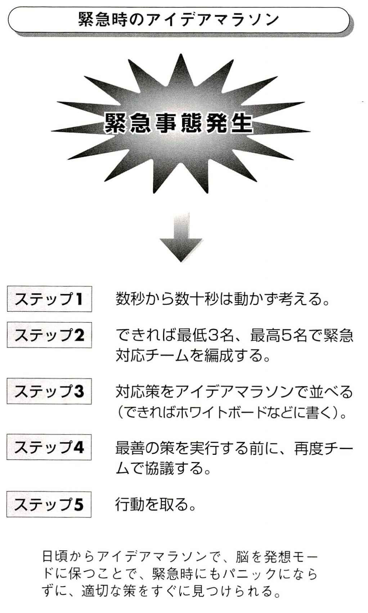
思いついた発想を毎日書くのがアイデアマラソンです。二〇年間の発想の体験を見ていると、私の発想のスタイルが記録されています。あなたが始めると、あなたのアイデアマラソンのスタイルができると思います。
二〇年間実行してきて、私の発想のスタイルは、多様化してきました。
〔１〕商品発想
初めは何か商品の新しい工夫を考えていました（ハードウェア発想）。いまだにこの発想は続いています。時計、カバン、机、車、文具、電気機器など、ありとあらゆる物が対象です。
〔２〕コンセプト発想
商品発想に続いて、コンセプト発想を記録し始めました。新しいコンセプト（構想）を訴えるものです。例えば、「ＮＨＫの映像資料を、学校教育向けに自由に利用できるように開放する」というコンセプト。
ＮＨＫには、過去のテレビの番組で制作したありとあらゆる種類の映像資料が残されています。特に自然科学関係や、日本国内の地理、風土、社会、公害問題など、これらの膨大な映像資料を、すべての学校のＰＣから光フアイバーを通じて任意に取り出して、生徒や学生たちが自由に見ることができるシステムです。もちろん学校であっても、利用するための費用は支払いますが、文部科学省がその利用に応じて、費用の分担をすることも考えます。
〔３〕ソフトウェア発想
当初から、ソフトウェアの発想は、どんどんノートに書き込んできました。コンピューターの新しいプログラムの発想など、仕事にも非常に関係する重要な発想部門です。
〔４〕プロジェクト発想
海外に駐在していて、その国のためになることとして、プロジェクトを考えました。
①
ナイジェリアにて
・ナイジェリア国内鉄道網の充実私案
・東西アフリカ横断鉄道の構想私案
・ラゴス環状鉄道の構想私案
②
ネパールにて
・ネパール産品輸出計画の立案
・ネパール縦断鉄道計画の立案（ヒマラヤトンネル）
・八〇〇〇メートルの山の斜面利用による宇宙発信基地の提案（未来計画）
〔５〕計画
家族の五カ年計画の立案などが中心になっています。子供たちの教育方針の計画などもあります。
〔６〕予定
旅行の予定、新規住宅の購・入計画なども、これで立ててきました。出版予定なども含まれています。
〔７〕調査発想
「これはどうしてだ？」と思うような疑問点を列挙することも、発想の一部です。
その他、食べ物発想、エッセイのネタ発想、新しい本の構想なども書いています。これらが混ざり合って、私のパーソナル発想領域を創り出しています。
毎日発想を書き込む、という基本ルール以外では、何をどのように書くかは、全く自由ですから、長く続けていくと、自分のスタイルが自然にできてくるのです。
アイデアマラソンを、自分の社会的、個人的環境に合わせて進めていくと、その人独特のスタイルで、発想が蓄積されていきます。実行している一人一人が異なっています。アイデアマラソンは、大きな鍋のようなもので、その中の発想がどのように料理されるかは、実行する人の自由です。
あなたが、アイデアマラソンを開始し、数千個の発想が蓄積されると、あなた自身だけが理解できるアイデアマラソンのスタイルとなります。自分の得意な分野、専門分野の色調が染み出してくることもぁります。
アイデアマラソンでは、実行している人の個性が異なっているところが、とても楽しい点です。この発想システムは、極めて柔軟なものですから、どんな形にも応じるように、進めることが可能です。
発想コーナー
「自分の衣服」
アイデアマラソンは、一人一人が身に着ける衣服です。衣服には、人に見せない下着もあります。外出で着ていく服もあります。それぞれが、違う衣服を着ます。他人には見せないが、家族には見せる寝巻きのような服もあります。
◆ポイント
①
アイデアマラソンの個性（パーソナルエリア）は、数千個の発想を書くことで、自然に決まってくる。それまで気楽に続ければ、個性が出る。
②
アイデアマラソンをいかに利用するかも、やはり数千個の発想を積み上げると、自分にとっての利用法が分かってくる。
③
自分の発想の個性は、人生の生きがいの種になるかもしれないので、非常に貴重です。発想の個性を自分なりに理解できれば、強烈な自信が付きます。
◆プラクティス
現在、仕事や研究や学習で、悩んでいる課題はありませんか。
題はありませんか。その解決案を、ノートに書きましょう。
アイデアマラソン格言集④
●腹が立ったら一〇個発想を書け。もっと腹が立ったら一〇〇個出せ。
●実行するまでは、発想を慎重に選び、いったん選んだら、大胆に実行せよ。
●今日は陳腐でも明日は斬新という発想がある。
●今日出せるだけの発想を出し、記録せよ。そうすれば、明日はもっと出る。
●平凡な発想がたくさんないと、非几な発想はありえない。
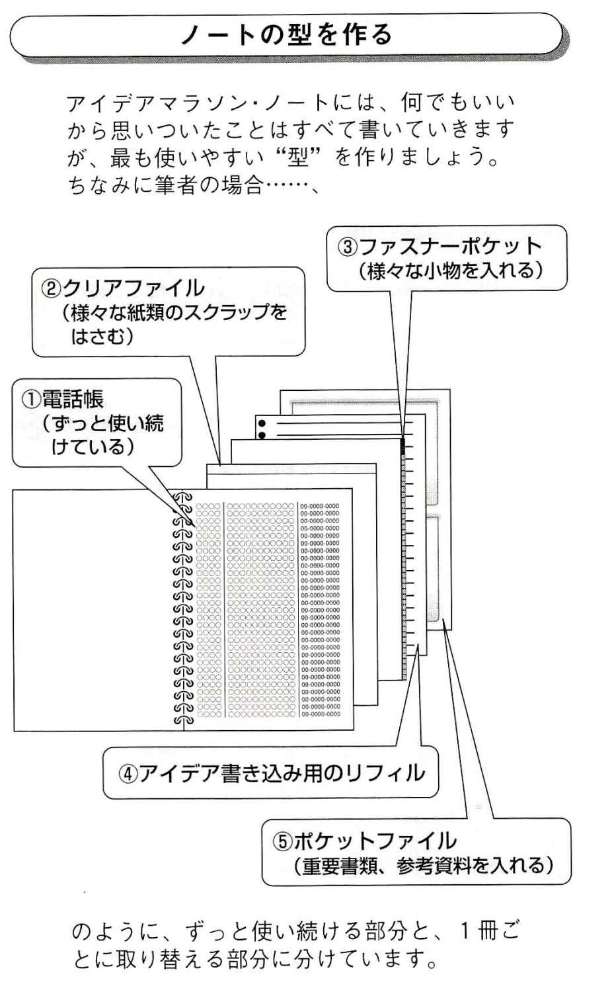
アイデアマラソンがビジネスのどのような時に役立ったかを説明しましょう。
〔１〕転勤や異動の時の期待をアイデアマラソンで計画立案
私は、過去何度か転勤や異動をしてきた時、内定を受けると、着任する前に、次の任地や勤務地、職場での仕事の予測を、アイデアマラソンに書き留めることにしていました。
内定から異動までの間は無茶苦茶慌ただしく、忙しいのですが、次の任地のことを思うと、期待が膨らんだり、心細くなったりするものです。周りのうわさからも、次の任地のことを、いろいろ考えてしまうのが普通なのです。それらの中で、前向き、積極的、建設的な発想は、すべてノートに書き留めて、転勤前に、それらの発想ばかりを集結させて、新任地での行動計画書を作っていました。
メモした個別の発想から、計画書に書き換える段階で、またまたたくさんの新しい発想が生まれてきました。
数年経って、その計画書や記録を読み返してみると、びっくりすることが多かったのです。着任前、赴任前、まだ全く実情を知らないで書いていた計画書や予測書が、驚くほど鋭い観点で書かれていることがあるのです。
赴任後、忙しさに忙殺されて忘れてしまっていたフレッシュな観点がそこに残っていたりします。
「こ、これを実行しなくては」と気を引き締めることになるのです。
〔２〕基本計画などの立案
会社というのは、中長期の計画を、毎年立案しては、次の年次に入っていくものです。また、四半期ごとにも、計画の立案を要請されます。これは毎年ほぼ同じ動きです。そうなると、アイデアマラソンは強力な武器になります。
（もうニか月ほどすれば......中長期計画の立案か、ようし、今から、主要な項目だけは集めてみよう）
骨子の項目を頭の中から絞り出し、ノートにありとあらゆる着想や構想を記録し続けて数週間を過ごすのです。
仕事の発想が、帰途の喫茶店で出るかもしれませんし、家に帰って思いつくかもしれません。それらの多数の発想を、全部書いておきます。期限の直前には、それらすべての発想を集中させて、提出の書類を作り始めると、盤石の報告書や提案書を作成することが可能となります。
〔３〕営業の武器は新発想
営業は常に新しい発想を必要としています。激しい競争の中での営業となれば、なおさら新しい発想が必要なのです。たとえ今まで安定して注文が取れているものでも、いつかは商売が難しくなる可能性を秘めているものです。
新しい発想を考えることは、まさに営業の推進力の芯になる部分を創造していることです。営業だけではありません。開発部門も、製造部門も、やはり常に新しい発想を必要としていて、それらの導入をやめると、たちまち停滞から難渋に進んでしまいます。
ところが、常に一つでも新しい発想を考えて、次の仕事をすると、うまくいく可能性がグンと高くなるものです。私は商社の営業マンとして、この営業の最大の武器は新しい発想であると確信してきました。
〔４〕緊急時にも発想が
いつも「発想、発想」と自分の脳を追いまくっていると、緊急の時にも、脳は一気にフルスピードで活動するようになります。脳が適当に準備運動をしているからいつでも全速で回転させることが可能となります。
緊急時にこそ、重要な、鋭い発想を出さないと、とんでもない結果になりかねません。脳はアイデアマラソンの継続の一環として、様々な発想を出してくるのです。ビジネスの緊急事態は、ちょうど落語の大喜利のように、舞台に並んで座っていて、課題に合わせて「何か面白いことを瞬間的に考えて言ってみろ」というのに似ています。緊急事態がアイデアマラソンの発想で救われた時、会社人としてどれほど幸運かが分かるでしょう。
アイデアマラソンは、豊かなあなたの思考の変化を、できるだけ具体的に切り刻んで、ノートに一つ一つ書き留めていく行為です。 一つの発想が出た時に、同じ関連、連想からの発想群を出していくことが、アイデアマラソンの集中度となります。
小さな手提げの布のトートバッグ（買い物バッグ）を見たとしましよう。そのバッグに、可愛いネコの顔が刺繍で縫い付けであるのを見て、ネコの顔が付いているなら、「ネコの尻尾をトートバッグに付けては？」と考え始めたとします。
①
「ネコの尻尾の付いたトートバッグ」と、書きます。これでおしまいでも良いのですが、アイデアマラソンでは、ここから意識的に思考を開始します。どんどん発想をノートに書き落としていきます。たとえ、こじつけに近くなっても、無理やりに拡大していきます。
②
「リスの尻尾の付いたトートバッグ」
③
「豚の尻尾の付いたトートバッグ」
などと、この世の動物の数だけアイデアを出すことも可能ですが、意味はありません。それよりも、
④
「尾長鶏や孔雀の尻尾を付ける」
⑤
「魚の尻尾を付ける」
のほうが、面白いでしよう。いっそ、
⑥
「魚の尻尾型のトートパッグ」
⑦
「大きな魚の下半身の、バッグ」
というのも考えられます。
⑧
「シーラカンスの体のトートバッグ」
というよりも
⑨
「オトトバッグ」
ではいかがでしよう。
⑩
「マンボウやカワ八ギのようなおどけたオトトバッグ」
⑪
「八コフグ化粧バッグ」
トートバッグに色々なものを付けていくという方向で考えると、
⑫
「はたきの付いたトートバッグ」
⑬
「耳の付いたトートバッグ」
⑭
「ウサギ耳の付いたトートバッグ」
⑮
「キツネ耳の付いたトートバッグ」
などと、広がっていきます。こうなると、書いておかないと、とても頭に保存できません。そこでノートがいるのです。
尻尾や耳を付けられるなら、もっと別のものも付けられないかと考えるあたりから、アイデアマラソンが全開になってきます。
⑯
「象の鼻の付いたトートバッグ」
⑰
「人間の鼻の付いたトートバッグ」
⑱
「自分の鼻を現実に型で取って、トートバッグに付ける」
⑲
「巨大な鼻を付ける」
⑳
「馬のお尻のリュックサック（尻尾付き）」
なども考えられます。更に、
㉑
「色々な動物のお尻の形をしたバッグ」
㉒
「豚のお尻のリュックサック」
㉓
「マリリンモンローのヒップのバッグ」
㉔
「ミロのビーナス形ウエストのバッグ」
などという（ダリ風）の新たな展開が考えられます。
更に付属した発想として、
㉕
「四つの足をトートバッグに付ける」
㉖
「四つの足に可愛い靴を履かせる」
㉗
「四つの足で、トートバッグが立つ」
㉘
「四つの足が動くバッグ」
なども考えられます。その他、
㉙
「灰皿の付いたトートバッグ」
㉚
「ライターの付いたトートバッグ」
㉛
「喫煙用吸煙器付きトートバッグ」
㉜
「傘入れの付いた防水ポケット付きトートバッグ」
㉝
「ジャケツトを留めればトートバッグ」
㉞
「超小型のトートバッグで、五〇〇円玉を四個入れることができる」
㉟
「トートバッグの外側に台所のワイヤラックを付け、色々なものを括り付けることができる」
㊱
「トートバッグの外側に大きなカレンダー」
㊲
「トートバッグの外側に毎月のカレンダーを差し替える」
㊳
「トートバッグの外側に大きなアナログ時計」
このように、色々雑多な発想が、数限りなく出てきます。
これらの発想は、私が本章を書いている時に、頭に浮かんだもので、この章を書き上げた後で、アイデアノートに記載しています。一つ一つが、ノートの一つの発想なのです。
バッグに関しては何千もの発想が、すでに過去二〇年の間に書かれていますから、これらはそのうちのごく一部です。大半は、くずアイデアですが、実現を目指すものも出てきます。
現在、駐在しているネパールでは、自分のデザインのバッグをごく簡単に作ってくれる店がたくさんあります。それも格安です。尻尾付きトートバッグにするか、マリリンのお尻にするか悩んでいます。
人間の脳は、必ずしも完成した思考を思いつくものではありません。最後まで思考の料理を終えないで、次に取りかかっていることが実に多いのです。
脳の中では、曖味な表現、未完成の思考や具象のままで、別の思考に移っていきます。同じ思考に何度も戻ってきて、少しずつ完成に近づくこともありますが、通常、意識をしなければ、全く別個の思考に移ってしまいます。
発想能力というのは、脳が醸し出すごく短繊維の発想の切れ端を意識的に引っ張り出して、自己完成した発想にまとめ上げて、思考の糸を撚ることです。そのために、書くか、話すかどちらかのコースを選ぶのです。ここで書かなければ、短時間で忘れてしまうに違いありません。
この点でも、アイデアマラソンは強烈な影響を与えます。アイデアマラソンは、思考を、短くても一応完成品、まとまり思考に整えてから書き留めるので、脳の一番の弱点を補強できます。これを「アイデアマラソンの思考補強効果」
と呼びます。
アイデアマラソンの思考完成効果では、ハードウェアの新しい工夫ということだけでなく、ソフトウェアも同じです。
【発想例】泳いだ距離を測る装置
ホテルのプールで泳いだ後、ノートを広げて、「今日は、プールを何回往復したのだったっけ」と、断片的な質問が頭に浮かんだとします。
①
「ああ、そうか、泳いでいる距離を測る装置は考えられないか」。こういう発想から始まります。
②
腕時計に、叩けば回数が表示される防水の回数計があれば、プールの端まで到達して壁に当てねば回数が一回増える。
③
水泳の速度は出せないか。
④
腰に付ける水泳速度 距離計は考えられるか。
⑤
帽子に発信機を付けて、プールの端の受信機で、泳いだ距離を測ることが可能か。
⑥
ＧＰＳのように、特定の人のプールでの動きを正確に把握して、移動距離、水泳距離を測定し、記録する屋内位置測定システム(Indoor Positioning System:IPS)は開発できないか。
⑦
ｌＰＳが完成すれば、サツカーや野球の特定の人やボールをカメラが自動追尾することも可能になる。
こうしたような断片的な思考から、様々な自己完結的な発想に進んでいくのです。一つ一つの発想を自己完結させて書き留めると、次々に新しい関連の発想が出てくるのです。脳に、ノートの代わりをさせることは不可能です。
アイデアマラソン・ノートの、最大のメリットがこの発想完結作用であると思います。
脳は曖昧発想を基本としていますから、自己完結したノートの文を自分の目で見て、それが脳にフィードバックされると、二次、三次のインパクトを脳が受けて、また別の発想をしていくのです。
〔１〕宝石の発想
宝石の原石は、カットしてみないとどんな宝石になるのか分かりません。
発想も、いったんはアイデアマラソン・ノートに書き込んで、その関係や似たものの発想を勢ぞろいさせてみるまでは、よく分からないものです。ところが、中にギョッとするほど優れた発想が見つかることがあります。
「何でこんな簡単な、素晴らしい発想に今まで気がつかなかったのだろうか」と自画自賛で思うのです。
【発想例】ネパールの水晶
カトマンドゥに駐在して分かったのですが、ヒマラヤは有数の水品の産地です。人の頭くらいの水晶を、色々な形に作って、土産物店で売っています。
特に仏教やヒンドウ教の関係の仏具、透明の珠などを作って、町の色々なところで売っています。それを見ていて、私のアイデアマラソンが起動しました。私は少年の頃、昆虫採集と鉱石標本採集が趣味でした。小さなこ飯粒のような水晶を大切な宝物にしていたものです。
アイデアマラソン・ノートに、ヒマラヤの水晶を何かに使えないかという発想を、いくつもいくつも書き始めました。
品質の非常に良い水品は、電子機器の素材になります。シリコン結晶を製造する増壻も、水晶の素材であるクォーツでできています。
その品質たるや非常に純度の高いものが必要とされていて、世界中でその純度の高いクォーツを供給できるのはブラジルなど、極めて限られた国だけです。
また水晶は、無線器などの発信器に使われます。更にピエゾ効果といって、急なひずみを衝撃で生じさせると電気を発生する性質があり、使い捨てライターの点火にも使われています。
私はカトマンドゥの水晶屋さんを探し、美しいサンプルを何個か購入し、東京に送りました。残念ながらこれらのサンプルの純度は、電子部品には向いていませんでした。
ネパールでは、水晶は不思議な力を持っていると考えられています。頭が痛くなると、祈躊師が大きな水品の先端を頭にくっつけて、「痛いの、痛いの、飛んでいけ」とやって、見事にうつし治すというのです。
いつも水晶を身に付けていると、力と幸運が来ると信じられています。私は水晶屋さんの事務室にある金魚の水槽が気になりました。金魚の水槽の底には、赤ちゃんの指ほどの水晶が敷き詰めてあったのです。いずれも数センチの小さな美しい形の水晶です。
「ああ、それはくずです。遠くの山から水晶を運んでくると、そのような小さな水晶が、落ちるのです」
「へえ、綺麗だね」
「欲しければ、いくらでも差し上げますが」
と言う。
「まあ、ただでくれるのは良いんだけれど、これを使って、小さなお土産を作ってはどうかね」と私は言い出しました。
そして次頁の図のようなデザインをノートに書いて、その水晶屋さんに渡しました。
一週間後、できてきたのが、写真のような水晶のペンダントです。
これは、私が創り出したカトマンドゥの新しいお土産です。カトマンドゥに来るお客さまや友人に、
「ヒマラヤのカケラを一つ、お土産にいかがですか。私がデザインしました」
と説明すると（この樋口にこんなアートの感覚があるのかと一瞬驚いた顔をされて）、「ありがとう」と喜んでもらえるのが何より楽しみです。
私のノートの中には、水品の用途としてたくさんデザインを描き残しています。
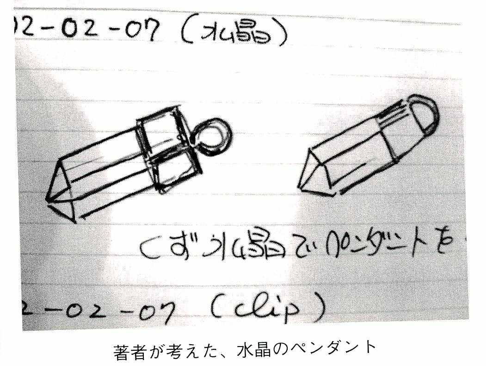
〔２〕発想の当たり外れ
発想に当たり外れがあるのでしょうか。
もちろんあります。
ほとんどの発想は、そのままでは使えません。煮ても焼いても、削っても食えません。
ただ、三〇〇個ほどの（自分でオリジナルだと信じている）発想を出すと、その中には一個程度は非常に優れた発想が混ざっていることが、体験から推測できるようになってきています。
つまり総発想数の約〇・三％
を私は「有効発想密度」と呼んでいます。この有効発想密度は、個人でやっている場合でも、団体でやっている場合でもほぼ変わりませんが、グループが、わいわいと議論しながら発想を記録すると、二〇〇個に一個、つまり〇・五％
くらいに有効発想密度が上昇します。多分、相互の発想の干渉が、発想の内容の質的レベルを高めるからだと思います。
アイデアマラソンを開始した時期と比べると、アイデアマラソンに慣れてくれば、発想の質が少しずつ向上していきます。
会社で新規事業を開始しようとする場合には、少なくとも数百程度のオリジナルな発想を出してこそ、ようやく面白い発想が一個出てくるものだということです。
数十個、黒板に書ける程度のものを並べても、その中に有効な発想があるとは思えません。社員全員が奮発して発想を数千個出せば、その中には、極めて高い率で良い発想が混じっているのです。
大切なのは、それらの発想を分析する人が、このアイデアマラソンを実行していないと、それらの価値が分からないことが多いということです。
私の発想総数は、一八万個ですから、五四〇個程度の優れた発想を持っているということになります。
これは大変な数です。私の知的財産なのです。
だからこそ、質を気にしないで、たくさん、とにかくたくさん発想を書き残すことをお勧めするのです。
私のノートにはたくさんの料理の発想が入っています。
色々な国を回ってきましたから、その国の食べ物と日本の食べ物とを比較したり、混ぜ合わせたり、日本風にしたり、逆に日本の食べ物をその国風にしたりします。
ネパールには家庭で造るロキシーという蒸留酒があります。お米から造るのですが、無色透明で癖がなく、日本の焼酎と同じでとても飲みやすいものです。我が家のお手伝いさんが長年のロキシー醸造の名人です。
お手伝いさんが、母親と妹たちを連れてきて、我が家で造ったロキシーを見て、すぐに思いついた発想は、ネパールで豊富に採れる果物をロキシーに漬け込んだ果樹酒を造ることでした。まずは、この国の素晴らしい果物になったイチゴがあります。日本の品種が、日本の専門家によって紹介され、豊かで目当たりの良いなだらかな山地の傾斜の段々畑で、大きなイチゴが実ります。
ざら目の砂糖と一緒に、イチゴをロキシーに漬けてみました。数か月後、ロキシーに美しいピンク色が付いて、とても美味しいイチゴ酒ができました。それに味をしめて、にんにく、プラム、ライチーなどを漬けています。お客にも非常に好評です。ネパール全国を調べたわけではありませんが、ネパールでは、ロキシーをベースとした果実酒はありません。ロキシーに果物を漬ける果実酒はネパールでは新発想だったのです。
食べ物発想は楽しいことと、数を稼げることから、今までに、ずいぶん出してきました。
発想も料理と同じです。せっかく作られた料理なら食べてもらわないと、意味がありません。つまり発想の最終目的は、やはり私たちの発想された内容を実現することにあるのです。
何でもかんでも、作るわけにはいきませんし、私のような商社マンでは作る技術も時間もありません。選択に選択を重ねて、実行と実現に向かうのです。
アイデアマラソン格言集⑤
●仕事を得るためには、まず発想を出さないといけない。
●絶えず発想を出そうとするものは、発想に救われる。
●社員はまず自分の発想を磨くことを考えろ。そうすれば、会社のためになる。
●トップが発想を出さずに、社員に発想を出せと言えない。
●経営者の先見性は、ありとあらゆることを考えていればどれかは当たる。ただ、どれを選ぶかは難しい。
周りにあるものを見てください。カバンも、腕時計も、ペンも、シャツも、すべて発想の練習になります。自分の仕事と関係がなくても、今まで見慣れたものでも、すべて自分の脳の訓練と考えて、ノートに書き連ねていきましょう。
〔１〕スニーカーの発想
【発想例１】地下足袋
のようなスニーカー。
【発想例２】自分の好きな写真や生地をスニーカーの外側に貼れる。
【発想例３】スニーカーに刺繍。
【練習題】
１．素材を変えるには？ （例えば、金属メッシュのスニーカー）
２．形を変えるには？ （例えばスニーカーに蓋を付ける）
３．カスタマイズするには？ （例えばカスタマイズ用粘着シール）
〔２〕ベビーカーの発想
【発想例１】後ろから押すお母さんがベビーの顔を見ることができるサイドミラー付きベビーカー。
【発想例２】太陽がどこにあっても、赤ちゃんに直射日光が当たらないように自動追尾して赤ちゃんを守るシェードの付いたベビーカー。
【発想例３】赤ちゃん用タッチパネルＰＣ。触るとカレイドスコープ（万華鏡）のように、様々な模様になる。
【練習題】
１．ベビーカーに何か別の機能を持たせるには？ （例えば、ベビーの下に、荷物を収納するスペース）
２．ベビーカーを飾るには？ （例えば、ベビーカーに一輪挿し）
３．ベビーカーを別のものに転用するには？ （例えば、ベビーカーが、アウトドアのデスクやテーブルになる）
〔３〕テーブルの発想
【発想例１】丸いテーブルの下に、回転する本棚。
【発想例２】テーブルの下に、カプセル式ベッド。
【発想例３】一メートル四方のテーブルをタンデム式に自由に接続して大きく、色々な形のテーブルにできる。
【練習題】
１．テーブルの素材を新しくするには？ （例えば、表面に金佑を貼って、その上をラミネー卜する）
２．テーブルを多機能にするには？ （例えば、電卓を内蔵させる）
３．テーブルを別の家具に転用するには
（例えば、テーブルがベンチに変わる）
４．椅子で新しいデザインを三つ考えなさい。
５．ベッドで新しいデザインを三つ考えなさい。
６．シャンデリアで新しいデザインを三つ考えなさい。
ある課題について少し深く考えていくと、ひょっとしたら役に立つかもしれないアイデアが、いくらでもあります。例えば車などで不自由していることは、すべて発想に転換できます。困ったという体験は、発想のネタとして記録しておくと良いでしょう。
【練習題】
１．タイヤの空気圧の状態を、車内で運転中からモニターする方法は？ （例えば、パンク警報）
２．パワーウインドウの車でも、窓を手動で開けるには？ （例えば、回転ハンドルの復活や、回転ハンドルと電動開閉の併用など）
３．高齢者用の携帯電話は？ （例えば、巨大キーボードとモニター）
４．台所で活躍してくれるロボットは？ （例えば、充電式冷蔵庫ロボットが冷えたビールのビンと缶、冷たい水タンクを搭載していて、呼べばグラスと一緒にあなたのところまで歩いてくる）
５．携帯式お仏壇の開発は？ （例えば、亡くなったご先祖様を旅行に一緒に連れて行ってあげるための、お仏壇スーツケースの開発）
６．相手がどう感じているかを分析する装置はできないか？ （例えば、海外などで何を言っているのかは分からないが、感情だけは分かる分析機。怒っているとか、訴えているとか、必死とか）
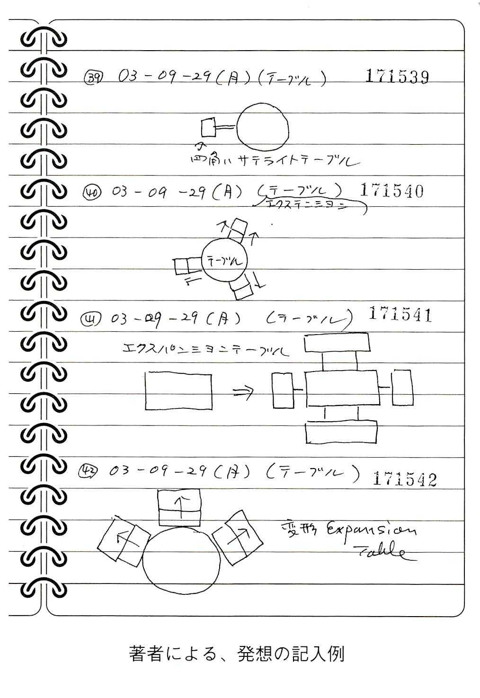
現在の日本人には夢がないといわれています。
夢のない政治の責任です。夢さえ明確になっていれば、多くの国民が同じ方向で未来を見ることができるのですが。
夢のない世界経済大国二位なんて、全くのナンセンスです。長期展望のない、事なかれ主義の社会は、海岸の砂の城です。若者たちが一番不満に思っているのは、職がないことでしょうが、その底辺には日本に夢のないことがあります。
そこで、日本の国や国民としての夢のプロジェクトを四つほど考えてみましょう。
例えば、
①
アンドロイド型ロボットによる火星探検を二〇三〇年までに。
②
日本海の海底鉱物資源探査。五
③
サハリンまでの海底トンネルの建設。
④
大型観光潜水艇や観光潜水艇搭載の客船。
私たちの仕事、人生、日常生活を改善するための方策などは、いつ考えても良いのですが、一つを書き終わると、その向こうにあるもう一つの発想が見えてくるものです。
【練習題】
１．鉄のドア、木のドアの内側に何を付けるかを五つ考えなさい。
２．時計のバンドに何を付けるか、三つ考えなさい。
３．トートバッグの外側に何を付けるか三つ考えなさい。
４．椅子の背の後ろ側に何を付けるか、何か他の機能を持たせるか三つ考えなさい。
５．ネクタイビンに何か他の機能を持たせるためには。三つ考えなさい。
６．今、住んでいる家から別のところに住むとすれば、どこに住みたいですか。
７．セカンドハウスを持つとすれば、どこを選びますか。
８．今の会社の本社を移転させるとすれば、どこを候補にしますか。勝手に理由を付けて、考えなさい。
９．今の会社の新規海外展開を三つ、可能性の概要だけでも考えなさい。
10
．自分が取れる、取りたいと思っている資格を三つ考えなさい。
11
．自分が次の外国語を勉強するとすれば、何語を選びますか。
12
．次の海外旅行は、いつ頂、どこに行きたいと考えますか。二つ候補を考えなさい。
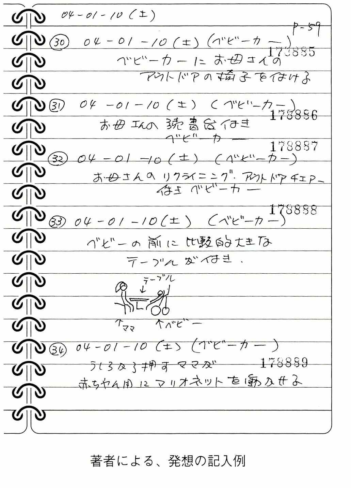
アイデアマラソン格言集⑥
● 今思いつかないと、一〇年経っても思いつかない。今やらないと、一〇年経ってもやらない。
● チャンスは貯金できないが、チャンスを作る発想は溜められる。
● 友は、発想を倍にする。
● 砂利のような発想の重要性は、砂利のないぬかるみの道路を考えれば分かる。
● 自分にノルマを課すことで、他人に押し付ける辛さを知れ。
読者が本書を読んで独りでアイデアマラソンを開始されたとします。
一か月ほど続くと、誰か他の人が一緒にアイデアマラソンを実行しないかと無性に考え始めるのです。これは人間の長い間の社会的動物としての習慣で、自分の発見を、家族、友人、仲間でシェアしたいと感じるのです。
自分の考えついたことを他の人に発表したい、他の人に聞いてほしいという願望も極めて正常です。特にそれが配偶者間や、家族の中でうまく働くとこれは素晴らしい生活環境になります。
自分の発想を発表するということは、家族でも誰でも、他人の発想を聞くことにつながり、他人の発想がまた刺激となってもっとたくさんの発想を創り出せるのです。
アイデアマラソンの実行は、「人恋しさ」とか「人なつっこさ」を作るといえます。この人恋しさの感じは、社会性とかネットワーク重視の傾向となり、グループ間でのアイデアマラソンの効果を起こします。
米国のヴァージエア大学の工学部では、毎年五〇名ほどの学生がアイデアマラソンを授業として実行しており、すでに一九九七年からの実績があります。
日本国内でも、アイデアマラソンは、すでにいくつかの企業の研究所内とか、新人研修で採用されています。
全員がノートを持ち、毎日の日記を書き込み、更に自分の意見を書き込むことが習慣になれば、発想能力だけでなく、書く力や段取りなども、能力が向上します。グループ・アイデアマラソンでは協調性や、自分の会社や研究所に対する愛社、愛着、貢献などの効果が出るでしょう。
アイデアマラソンをグループで行うためには、全員が同種類のノートを持ち、書き入れることが必要になります。これを実行する時は、会社であれば社長から新人まで、営業も生産現場も全員が同じノートを所持することになります。
一〇〇人の企業であれば、一年間に三万六五〇〇個の発想が蓄積されます。その中には、だいたい一〇〇個程度の素晴らしい発想が含まれている可能性が高く、それらを活用することで、企業も個人も潤います。
最近の検討結果では、アイデアマラソンに熟達している人の数が増えてくるとこの素晴らしい発想が出る割合も増えるようです。
現在の企業も研究所も、それに属する人全員の個別の能力を向上させて、それらをグループ内で披露し、お互いの影響と励ましの中で、会社全体に効果が反映されるようになります。
個人でも、安定して発想が出るようになると、誰もが自分の発想のデータベース化を必要と考えます。もちろん数十万の発想になると、それらを全部覚えることは不可能ですから、データベースに入れることは、それらの発想を実行したり、検索したりするには便利です。
ただ、データベースを個人でインプットするためには、かなりの時間をかけることになります。私はすでに一人万個の発想を二七八冊のノートに蓄えてきましたが、アイデアマラソンを開始した当時は、パソコンが存在しなかったのです。
現在の構想としては、すでに過去三年間、「優れた発想」にキラキラシールを貼り付けてきているので、それらを抽出して、その分だけをデータベースに入れるという便宜的方法を考えています。
今からアイデアマラソンを開始される人は、当初からアクセスやエクセルなどを使って、発想をデータベース化されることが望ましいでしょう。この場合に、ノートに書き、パソコンに入れる作業をすると、脳は更に活発に刺激を受けることになります。これを「アイデアマラソンの迂回の法則」と呼びます。
迂回の法則とは、「アイデアマラソンで思いついたことを、ノートに書く前やノートに書いた後、周辺の人に話したり、ＩＣレコーダーを使ったリメモにいったん書き留めてからノートに書いたり、パソコンなどに入力した後ノートに書き入れたりすると、発想が増え、発想が広がる」ということです。
アイデアマラソンを企業内や研究所内で行う時は、データベースは絶対に必要です。企業内や研究所内では、お互いに出した発想を、その企業や研究所の中でシェアすることが極めて重要だからです。
企業内のどのパソコンからでも、グループ。アイデアマラソンに登録することが可能になっていなければなりません。
また同僚が出した発想に上乗せしたり、改良したりすることも、同じ企業内や研究所内であれば、遠慮なくできるところも素晴らしいことです。
データベース化は難しいものではありません。発想番号、発想者名、発想日付、大分類、中分類、小分類、発想の内容、関連発想、付属スケッチや絵、写真などが記入できて、全キーワード・検索ができれば、良いのです。
ただ社員が何千人もの会社の場合は、これらの発想の保管では、バックアップを取っておく必要が有るでしょう必要が有るでしょう。
米国のヴァージニア大学でアイデアマラソンを開始した時、五〇名の学生たちにノートを渡しましたが、そのうち二人は、直接ノートパソコンに記録したいと、助教授に頼んできたそうです。
私は了承しました。自分の出した発想をいかなる形であれ、記録しておこうというのがアイデアマラソンの最初の趣旨ですから、それがノートであれ、パソコンであれ、手帳であっても構わないのです。
日本でも、パソコンに入れるのが先という人は必ずいます。ただ、私は、それらのパソコンに入っている発想を、どこかの切り目で（例えば一〇〇個ずつとか）印刷して、冊子にしてしまい、見直すことをお勧めします。パソコンに入れられた数多くの発想データを見直す時、ノートであれば、簡単に前後や全体を俯瞰できますが、パソコンはひとつひとつを正確に提示して見せてくれるしか能がありません。脳を発展させるのは間違いなく手書きだと信じています。
それら過去の発想群の中から、新しい発想の方向が見えたりして、発想が増えていくからです。
よく尋ねられる質問を集めてみました。
Ｑ 発想がなかなか出せずに、継続できません。どうすればいいでしょうか？
Ａ アイデアマラソンの大敵は、発想が出ないということではありません。発想を出すことを忘れることです。出そうと思えば出せるのに、ついつい忘れてしまう。それがアイデアマラソンの大敵です。
昔は、私は小さな紙切れをいくつか用意して、「アイデアマラソンは？」と書いて、洗面台に置いたりしたものです。それを見て、毎晩忘れずにアイデアを出してから寝るようにしました。その気になれば、アイデアは必ず出るはずです。
Ｑ どうしても発想が湧かない時の対処法はありますか？
Ａ 発想が出しにくい時は、二つのものを一緒にする「カバン発想」といわれる方法を試してください。例えばミキサーとコーヒーメーカーを合体させる、といったものです。それをきっかけに、意外といいアイデアが浮かぶこともよくあります。
Ｑ 一日に発想が出なかったら、どうするのですか？
Ａ 眠るのを削り、発想を出すのです。寝なくても死ぬことはありません。発想が出ないことは死ぬほど辛いことです。
Ｑ 発想が出て、万が一ノートもＩＣレコーダーもない時は、どうすればいいですか？
Ａ 方法として、次のようなものがあります。
①
自分の名刺の裏や紙切れに書く。
②
手のひらに書く（恋人同士が一緒の時なら、お互いの手のひらに書くなんてすごくロマンチツクだと思います。「私があなたのノートになってあげます」なんて、絶対に我がヨメサンは言わないでしょうが......）。
③
周りにいる人に話して覚えておいてもらい、あとで「さっき私が話したのは、えーと、何だっけ」と尋る。とにかく、自分の記憶を頼りにすることだけはやめましょう。
Ｑ せっかく出した発想をどのように活かすのですか？
Ａ 実用化に耐える発想は三〇〇個に一個程度です。私の場合、今までは、実用化に耐える発想は、ほとんど仕事や執筆に充当してきました。今後は、ライフワークの実現に活かじしたいと思っています。
Ｑ そんなにせかせか人生を過ごして、転びませんか？ また時間が早く過ぎませんか？
Ａ まさにせかせかしていますので、転びます。転んでも、そこで何か小さな幸運を拾うのです。時間は油断するとひどく早く過ぎますから、私は一年に一度、自分の昔の友人と再会する海外旅行をしたり、自分のその年の本を出版したりせずには、その年を終わらせないでいるのです。まさにわらしべ生きがい長者です。
Ｑ いつも考えてばかりいて、疲れませんか？
Ａ 脳はいくら使っても、文句を言いません。脳は文句を言えないのです。ざまあみろです。それどころか脳は、いつもはすごく低いレベルで動いているのです。私たちがいくら一生懸命に使っても、ローギアからセカンドギアに入るくらいで、トップギアを使う必要もないほどなのです。脳が発想を求める姿勢は前向きです。フェラーリを渋滞の首都高速で走らせるようなものです。
Ｑ 年齢と発想には相関関係がありますか？
Ａ 妙な相関関係があります。若い時の奇抜な発想、全く今までの常識を（知らないから）打ち破る、そのダイナミズムのある発想の価値と、年長になって、様々な経験とアナロジーの蓄積からの発想の価値は、どちらも貴重だと思います。この若さと年長の組み合わせが、最良の結果を作ると思います。
一人が一八年かけて一〇万個出した場合と、二八〇人が一年で一〇万個出した場合と、どちらが良い発想が入っているでしょうか？
企業にとっては、二八〇人が一年で一〇万個出すほうが、良い発想が含まれていると思います。二八〇人の発想が相互に関連し合い、対象となるものに焦点を定められることから、テンションも高くなります。この二八〇人の場合、何らかの方法で、お互いにワイワイガヤガヤと発想をミックスできれば、遥かに有効です。ただ、個人とその家族の幸せという観点からすると、一人が一〇万個を出す場合のものが貴重になると思います。
Ｑ 樋口さんのアイデアマラソンの発想群は、最後はどうなるのですか？
Ａ 私は自分の遺書で、私のアイデアマラソン・ノートをすべてデータベースに納めることを、遺産から実行するよう指示しています。それが出来上がれば、ネットワーク上で誰もが利用することが可能になります。
Ｑ 樋口さんの奥さんと子供さんたちは、アイデアマラソンをどのように見ていますか？
Ａ ヨメサンも、子供たちも、全員がこのアイデアマラソンの値打ちを熟知しています。ヨメサンも開始しました。アイデアマラソンの実行能力を持っています。子供たちは自分の家族を持っています。アイデアマラソンの継承が彼らの精神面を支えると確信しています。アイデアマラソンは、次世代に継がれていくのです。（全部息子たちなので）彼らの奥さんたちも、彼らの子供たち（要は私の孫）も、アイデアマラソンを進める奔流となると信じています。源流は私がチョロチョロとした流れを作りましたが、それを子供たちが、ガンジス河のような大きな流れにしてくれると信じています。
それでは最後に、私から読者への質問です。
Ｑ （私）あなたは自分の未知の能力を自分で引き出すアイデアマラソンを簡単だと思いますか？
Ａ （仮想読者）なんだか、できるような気がしてきました。
（根気良く継続することだけが難しいのです。まさにマラソンです）
私 私を追い抜いてください。
仮想読者 分かりました。頑張ります。
アイデアマラソン格言集
●発想にも鮮度がある。
●発想は一定の速度でゆっくり出せば良い。実行は一気に進める。
●若い者の発想は、燃える石炭だ。年配の発想は、燃える石炭を安全に運ぶバケツだ。
●発想の数については、私の限界を私なりに挑戦する。みなは私の限界を超えてほしい。
●人生はすべて発想だ。
本書をようやくキンドル出版を通して、読者にお届けできる。すごくうれしい。この本は、完成までに数十年掛かった。それまでの発想体験をできるだけ詳細に説明している。今私の言いたいことは、だいたい説明今私の言いたいことは、だいたい説明できたと思う。本書を読み始めたら嘘だと嘘だと思ってもノートをノートを横に置いて欲しい。本書には例題、ヒントが満載で、それらをノートに書いていけば、アイデアマラソン発想法の感じを把握できるようになっている。さあ、がんばって自分の船で知的太洋に繰りだそう。いつか私を抜くことができるだろう私を抜くことができるだろう。
樋口健夫(ひぐちたけお) 博士 知識科学
樋口健夫(ひぐちたけお) 博士 知識科学
一九四六年京都生まれ 大阪外国語大学英語学科時代 船でオーストラリア・シドニー留学、マコーリー大学留学、その後帰国し、大阪外大卒業後、三井物産入社、機械担当、アフリカのナイジェリア・ラゴス(３年半)、中近東のサウジアラビア・リヤド（８年半）、東南アジアのベトナム・ハノイ（２年）、南西アジアのネパール・カトマンドゥ(４年半)を、いずれも家族（ヨメサンと息子たち３名）同伴で駐在。二〇〇四年に定年退職。
国際競争に打ち勝つために、サウジアラビア時代に独自開発した「アイデアマラソン発想法」の理論化と普及のために、アイデアマラソン研究所を設立。企業、研究所、大学での講演と講義を開始した。現在では、全国の幼稚園向けに、（一ヶ月でみるみる描画がうまくなる、好きになる）絵画の創造性を活用した「めだかアイデアマラソン」や、小学校向けに、一日一質問を与えて（質問する力をつける）ノートに書く「きっず・アイデアマラソン」の運動を進めている。
http://www.idea-marathon.net/
二〇一一年に、北陸先端科学技術大学院大学知識科学研究科博士課程に入学。二〇一四年に博士号（知識科学）取得。
トーランス式創造性テストの日本国内実施権取得
米国ジョージア大学教育学部トーランスセンター国際顧問団メンバー
日本創造学会評議員長
エッセイスト
「仕事ができる人のノート術」（東洋経済新報社）「一冊のノートで始める力続ける力をつける」（こう書房）など多数。
Kindle出版としては、
http://amzn.to/2AItQ7p
を参照ください。
樋口容視子（ひぐちよしこ）
・麗澤大学非常勤講師。
・元国際基督教大学、及び大学院グローバルリーダーシップ・スタディーズ講師。
・海外生活アドバイザー・異文化コンサルタントとして、企業、官庁の赴任前研修やビジネスマン向けの異文化研修を行う。
・海外赴任の夫に伴ってナイジェリア、サウジアラビア、ベトナム、ネパールなどに家族で通算15
年住み、旅した国は70
か国。
【学歴】 大阪外国語大学（現大阪大学）卒業。米国アンティオーク大学大学院マグレガースクール卒業（異文化関係学修士）。 北陸先端科学技術大学院大学博士課程後期 知識科学科在籍中（ビジネス文化人類学研究）。
【所属学会など】異文化コミュニケーション学会 （SIETAR Japan）運営委員。日本創造学会会員。NLP（神経言語プログラミング）トレーナー。異文化交流の会「バナナくらぶ」主催。
主な著書に「海外生活事典」（共著・実業之日本社）、「住んでみたサウジアラビア(共著・サイマル出版社)「異文化コミュニケーションワークブック（共著・三修社）」「海外生活・暮らしを楽しむ英会話（三修社）」。翻訳書「テンダーパワー」シェリー・コーエン（共同通信出版社）、その他多数。